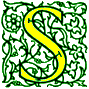
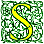
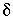

Signs for technical/specialized vocabulary
David Bar-Tzur
Links updated monthly with the help of LinkAlarm.
 

Walking skeleton1; spacewalk.
EXPLANATION OF THE GLOSSING SYSTEM
(to understand how I describe the signs in this dictionary).
For content knowledge of how to use the physics terms in context, see Guided tutorial in physics for interpreters.
For negotiating and developing temporary signs, see Preparation and sign negotiation
For vocabulary lists to determine helpful signs for a specific discipline, see Vocabulary lists by topic.
- -s (suffix, plural)
- (1) Add a plural pronoun after the noun to be modified - WOMAN THEM. (2) Add the sign GROUP after the noun - WOMAN GROUP. (3) Repeat the sign - SISTER SISTER. This only works for a few signs. (4) Add a definite number - BOY FOUR, FOUR BOY. (5) Add number incorporation: FOUR-OF-THEM. (6) Add a multiple classifier: SOLDIER, MULTIPLE-LOOK-AT. (6) Add an indefinite quantifier - FEW, SOME, MANY. (7) Use classifiers - CAR 3-CL’lined up in a row.
- -'s or s' (suffix, possessive)
- (1) [S], PO away, FO up, supinates and moves slightly > signer. (2) POSS.
- Sabbath
- ~ (Christian, except Seventh Day branches and World Wide Church of
God)
- (1) SUNDAY. (2) S-SUNDAY, where the variety of SUNDAY that moves the hands in antisymmetric circles is used. For an animated gif of this sign, see ASL browser: Sabbath.
- ~ (Jewish)
- (1) The DH [F], PO down, descends between NDH [B], PO down, at the wrist area and the body, then moves away from the body and rises up while changing to [S], PO down. (< Friday sunset to Saturday sunset.) (2) The DH [F], PO down, descends beyond NDH [B], PO down, at the wrist area. (3) The previous sign with an [S]. (4) REST DAY. (5) SATURDAY.
- sac (biology)
- (2h)[B], POs up, touch at sides, separate, and turn POs towards each other while moving up to outline a sac. For a QuickTime movie of this sign, see ASL browser - sac.
- sacrament
- ~ {LDS [Mormon]}
- BREAD WINE.
- ~ (Roman Catholic)
- S-CROSS.
- Sacrament meeting {LDS [Mormon]}
- BREAD WATER.
- sacred
- (1) GOD 'S. (2) S-CLEAN. (3) "H" CLEAN. (4) H-CLEAN.(5) S,B-CLEAN. (6) H CLEAN.
- Sacred Grove {LDS [Mormon]}
- S-NICE FOREST.
- sacrifice
- ~ (of physical things)
- (1) (2h)[B], POs up, are lifted up to God. (2) (2h)[B], POs down, are supinated and lifted up to God. (3) (2h)[S], POs up, are lifted up to God while opening to (2h)[B]. For an animated gif of this sign, see Animated dictionary of religious signs - Deaf Missions: Sacrifice.
- ~ (of one's self)
- SELF WANT++, GIVE-UP.
- sacrilege, sacrilegious
- (1) [1] touches nose and then moves up in an arc to God like DON'T-CARE. (2) [B^] is held under chin and then brought forward, opening into a [B], PO >, in the direction of God. (3) [S], is held with thumbside against nose, moves > DS, then is flung against Heaven while opening into [5], PO > NDS, FO up.
- sacristy
- HOLY ROOM.
- sacrosanct
- HOLY LEAVE-ALONE*.
- sacro-iliac joint
- S-I + (2h)[F], interlace and pivot.
- "sadge a star"
- S-G-R "A" STAR. Note: Sagittarius A* is abbreviated Sgr A* and read as "sadge a star".
- safe (strong box)
- BOX + with NDH held in its final position, DH [5:] turns the tumblers.
- safe (sex)
- (1) SAFE. (2) S-A-F-E.
- safer (sex)
- (1) SAFE. (2) SAVE -ER, where the second sign is the usual comparative form: [A], PO > NDS, FO away, moves upwards in an outward arc.
- safety glasses/goggles
- SAVE + (2h)C-CL tap twice at eyes.
- sag
- ~ (computers)
- This is the opposite of a "surge", so you can sign DH [O^], PO up, FO > NDS, is held against palm of NDH [B], PO down, and DH opens with fingers wiggling, then suddenly closes again to a [O^], all the time with thumb still touching NDH palm.
- ~ (material)
- (2h)[B], POs down, FOs ><, FTs overlap with DH FT above and DH FT push down NDH FT.
- sagittal plane
- (2h)1-CL"trace a rectangle" + [B] twists hand back so that FT can cut down body starting at midshoulder and stopping by the waist.
- sailor
- (1) NDH [1], PO > DS, follows [C], PO towards, as they both move > DS like mast and sail + AGENT. For a QuickTime movie of this sign, see ASL browser - sailor. (2) SHIP AGENT. (3) (2h)[B^] both close to (2h)[O^] while contacting NDS hips, then repeat the action for DS hips. For a QuickTime movie of this sign, see ASL browser - navy.
- Sadducees
- JEWISH GROUP FOLLOW TALMUD NOT.
- saguna
- (1) SUPREME DESCRIBE CAN. SUPREME is (2h)[A], FOs away, DH starts below NDH and arcs around it until it is on top. (2) SUPREME HAVE PARALLEL.
- saint
- ~ (uppercase, LDS [Mormon])
- S-MEMBER.
- ~ (most denominations)
- (1) S-CLEAN. (2) (2h)bC-CL are held above head like a halo. For a QuickTime movie of this sign, see ASL browser - saint.
- ~s (all Christians)
- HOLY PEOPLE.
- St. Patrick's Day
- (1) IRISH DAY, where the old ASL sign for "Irish" is used, that is, [V:], PO down, circles NDH [S], PO down, from above and then lands on the backhand. (2) [bX] twists FT against top of forearm close to elbow. (< pinching someone for not wearing green?)
- salaam alaikum (والسلام عليكم)
- Salute to the side and then touch your heart. To see a video of this sign, go to imandeaf-serrdeaf.
- Salah (الصلاة)
- PRAY {(2h)[loose 5], palms face each other, FOs up, hands descend and are clasped at the waist} FIVE-TIME EVERYDAY.
- salary
- [C], PO > NDS, FO away, circles in contact with [B], PO up, FO away, and then closes to [S]. For a QuickTime movie of "income", see ASL browser - income. Don't confuse with "wages", which is fingerspelled.
- saliva
- [4], PO towards, FO > NDS, brushes tip of index finger down the DS of the mouth repeatedly.
- sallahu alaihi asallam (After the mention of Muhammad's name)
- PRAY HE HAVE ALLAH 'S PEACE.
- Salmonella
- S-A-L.
- salvation
- S-FREE. For an animated gif of this sign, see Animated dictionary of religious signs - Deaf Missions: Salvation (Save).
- Sam (Character in Book of Mormon)
- S-A-M.
- samarium
- S-M. For more information on this and other elements, see The elements. And for fun, see Elements by Tom Lehrer. To see this song with captions, go to The Elements song by Tom Lehrer.
- Samoa (Samoa)
- (1) [A], PO > signer, FO up, rubs against cheek in circles. (2) FT of [X] taps neck. To see the reference source for the sign(s) for this country or to look up other countries in the same geographical area, see Indigenous signs for countries. To find signs for cities within this country (some have no entries) see Indigenous signs for cities.
- sample (Statistics)
- ~ (n)
- [5] picks from NDH [C], PO > DS, FO away, then with NDH still in place, [5], PO down, FO away, circles under NDH.
- ~ (v)
- (2h)alt.PICK-UP.
- ~ and hold
- "S" is placed in the numerator position and "H" is placed in the denominator position.
- samsara
- LIFE CYCLE++, SUFFER.
- sanatana dharma
- (1) INFINITE DUTY. Where the first sign is (2h)[Y], POs down, FOs ><, both hands separate smoothly so that DH FO is > the signer's front, and the NDH FO > the signer's back. (2) DUTY FOREVER.
- sanctification
- SPIRIT GROW.
- sanctified
- (1) HOLY. (2) SACRED.
- sanctify
- (1) MAKE HOLY. (2) MAKE SACRED.
- sanctuary
- HOLY PLACE.
- sandals
- (2h)[1] index feet + [1] moves backwards and is inserted between the index and middle fingers of NDH and vice versa.
- sandek
- HONOR HOW? HOLD BABY FOR CIRCUMCISION.
- sane
- THINK STRAIGHT. For a QuickTime movie of this sign, see ASL browser - sane.
- sangha
- [O^] changes to [5] while throwing the end of a monk's robe over the shoulder + COMMUNITY. The first sign description is for a Buddhist monk.
- sanitary napkin
- (1) MENSTRUATE + RECT-CL'long narrow shape'.
(2) MENSTRUATE + RECT-CL'long narrow shape' + (2h)[C dot] POs down, FOs away, DH is brought towards NDH and covers it so that the final position is like the final position in HYPOCRITE. (3) MENSTRUATE + P-A-D.
- sannyasi
- PLEASURE DETACH, where the last sign is (2h)[F] interlinked open and separate.
- Santa Claus
- [5:], FO > NDS, touches chin and arc down to chest to indicate beard. For a QuickTime movie of this sign, see ASL browser - Santa Claus.
- Sarah (שרה)
- S-PRINCESS, that is, [S] touches NDS clavicle, DS clavicle, and then DS waist (< its meaning, "princess").
- Sarai (שרי)
- S-A-R-A-I.
- sarcastic
- (2h)[horns], POs ><, FOs up, DH close to nose, NDH in neutral space, both hands pronate to POs down, and move past each other (DH closer to nose) towards the opposite side.
- Satan (שטן)
- DEVIL.
- satanic
- (1) IDEA~LIKE DEVIL. (2) DEVIL POSS.
- Satanism
- DEVIL WORSHIP.
- satay (沙爹, Asian cooking method)
- [1], PO down, FO > NDS, is dragged across the teeth > DS.
- satellite
- (1) DH [5:], PO down, circles [1] while both move to DS. For a QuickTime movie of this sign, see ASL browser - satellite. (2) DH [8], PO down, circles [O^], PO up, while DH alt. between open and closed 8. (3) NDH [1], PO > DS, FO up, acts as the object orbitted around and [5:], PO down, places itself at 12:00, 4:00 and 8:00, around NDH.
- satire
- SARCASTIC ACT.
- satisfy (a certain condition)
- MEET SPECIFIC REQUIRE+, where the second sign is (2h)[bX], NDPO up, DPO down, DHFT circles and touches NDHFT. Note: Interpreters seem to be hesitant to use the sign MEET for this meaning, but Deaf people use it all the time.
- saturated (fat or solution)
- NDH [B], PO down, FO > DS, DH [5], PO down, FO away, is held low and wiggles while rising until it arrives and strikes the NDH from below.
- sauce
- [A dot], thumb down, moves as if pouring a dressing.
- Saudi Arabia (المملكة العربية السعودية)
- [H], PO > signer, FO > NDS, touches DS of forehead. For a film of this sign, click on Saudi Arabia - المملكة العربية السعودية. To see the reference source for the sign(s) for this country or to look up other countries in the same geographical area, see Indigenous signs for countries. To find signs for cities within this country (some have no entries) see Indigenous signs for cities.
- save
- ~ (a file)
- (1)FT of [V] tap backhand of [S], PO > signer, FO > DS.
- ~ (from danger)
- S-FREE. For an animated gif of this sign, see Animated dictionary of religious signs - Deaf Missions: Save.
- ~ as (a file) as
- FT of [V] tap backhand of [S], PO > signer, FO > DS + with NDH still in position from the previous sign, DH [Y], PO away, FO up, moves from side to side.
- ~, savings (money)
- [O^], stuffs imaginary money into side of [C], PO away, FO up.
- saved
- SOUL, S-FREE.
- savings
- [O^], stuffs imaginary money into side of [C], PO away, FO up.
- Savior
- S-FREE AGENT. For an animated gif of this sign, see Animated dictionary of religious signs - Deaf Missions: Savior.
- saw
- [S] holds saw and moves across "log" held by [C], PO down. For a QuickTime movie of this sign, see ASL browser - saw.
- Sawm - Self-purification through fasting (الصوم)
- [Bb] wipes FT across mouth. For a film of this Saudi sign, click on Fasting.
- sawtooth wave
- W-A-V-E + 1-CL'draws sawtooth waveshape'.
- scabies
- S-C-A-B-I-E-S.
- scalar
- S-C-A-L-A-R.
- scale
- ~ (architecture)
- ~ (n)
- S-C-A-L-E.
- ~ (v)
- MEASURE.
- ~ (weighing instrument)
- ~ (spring scale)
- (1) Thumb and index finger pull up NDH [A], PO > signer, several times with a small movement. (2) Hands like final position of SIT and elbows alt. rise and fall. For a movie of this sign, see Dictionary of Sign (ASL) - scale.
- ~ (two-sided)
- (2h)[B], POs up, FOs away, alt. ascend and descend with multiple small movements.
- ~ (most other uses)
- S-C-A-L-E.
- scan
- [X], PO away, FO up, moves slowly to rt (not back and forth), under ND arm [B]. For a QuickTime movie of this sign, see ASL browser - scan.
- scandium
- S-C. For more information on this and other elements, see The elements. And for fun, see Elements by Tom Lehrer. To see this song with captions, go to The Elements song by Tom Lehrer.
- scanner
- [X], PO away, FO up, moves slowly to rt (not back and forth), under ND arm [B] + MACHINE. For a QuickTime movie of the first sign, see ASL browser - scan.
- scanning electron microscope
- S-E-M.
- scar
- ~ (physical)
- (1) S-C-A-R. (2) [X] scratches a horizontal scar above DS eyebrow. If the place of the scar is known, show actual placement and length of scar on body.
- ~ (psychological)
- [X] scratches a horizontal scar above DS eyebrow.
- scarce, scarcity
- (1) NOT ENOUGH. (2) (2h)[open 8], POs > signer, FOs up, alt. strike respective sides of chin with zz.
- scene
- ~ (cultural)
- S-CULTURE, that is, [S], FOs up, circles around [1], PO > DS, FOs up.
- ~ (theater)
- S-WRITE.
- schematic(s)
- PICTURE.
- schism
- ~
- CHURCH DISAGREE* + (2h)[1], POs down, are held side by side and then each arcs off to its respective side. For religions other than Christianity, substitute RELIGION.
- The Great ~
- ~ ~ (meaning 1)
- (<) ORTHODOX, (>) CATHOLIC, (2h)[1], POs down, are held side by side and then each arcs off to its respective side.
- ~ ~ (meaning 2)
- CHURCH DISAGREE* + (2h)[1], POs down, are held side by side and then the DH arcs off to its respective side, and both hand move over and complete this last action again.
- schizophrenic
- [B] makes a wavy line down the body, starting from the head, as if the self were fragmented.
- scholar
- [C], PO > NDS, FO away, taps at temple 2x + AGENT. For a QuickTime movie of the first sign, see ASL browser - scholarly.
- scholarly
- [C], PO > NDS, FO away, taps at temple 2x. For a QuickTime movie of this sign, see ASL browser - scholarly.
- schooling
- SCHOOL, GROW-UP.
- Schrödinger wave function
- Same as the sign PSYCHOLOGY (some people start this sign with THINK, in which case I mean the later half of the compound.)
- Schwarzschild radius
- R S"subscripted".
- science fiction
- S-C-I F-I.
- scientific notation
- SCIENCE + (2h)[1] cross at midfinger and wg while moving together > DS.
- score
- ~ (n)
- (1) COUNT+. (2) HOW-MANY? (3) NUMBER?
- ~ (v, scratch in a mark)
- Thumbnail of [A dot] scrapes down palm of [B], PO > DS, FO away.
- ~ (v, test)
- FIGURE-OUT SCORE(n).
- scorekeeper
- (1) NUMBER PUT-DOWN AGENT, where the second sign is [O^] touches FTs to [B], PO up, then changes to [B] and touches NDS palm to palm. (2) NUMBER COUNT AGENT.
- scoring (intentional parallel scratches)
- Thumbnail of [A dot] scrapes down palm of [B], PO > DS, FO away.
- scorpion
- (1) [5:], PO down crawls away with [X], PO away, resting on its back. For a QuickTime movie of this sign, see ASL browser - scorpion.
- scotch (whisky)
- [4], PO > arm, FO > NDS, is drawn against ND arm > front, then DH supinates and draws FT down arm to from a plaid.
- Scotland
- [S] arm is held with elbow at side and squeezes together 2x as if playing bagpipe. (< bagpipes.) For an animated gif of this sign, see BritishSignLanguage.com. Click on "List of words" - "Scotland." To see the reference source for the sign(s) for this country or to look up other countries in the same geographical area, see Indigenous signs for countries. To find signs for cities within this country (some have no entries) see Indigenous signs for cities.
- scout
- (v, media)
- SEARCH.
- Boy ~
- BOY + salute with [straightened M].
- Cub ~
- BOY + salute with [straightened N].
- Girl ~
- GIRL + salute with [straightened M].
- scorpion
- [X] sits atop the dorsal (back) side of [5:] and both move forward while NDH fingers wg. To see a series of stills of this sign, go to "scorpion" American Sign Language.
- scraper (Chemistry, Culinary Arts)
- RUBBER + small finger edge of [B], PO > NDS, FO away, scrapes several times > DS on palm of [B], PO up, FO > DS.
- screen
- ~ (basketball)
- (1) DH [4] runs FT down palm of NDH [5], PO > DS, FO away, first palm against palm, and then again with DPO > signer. (2) PREVENT.
- ~ (computers or media)
- (2h)[1] trace the outline of a computer screen, starting from the middle of the uppermost side.
- ~ (preview movie)
- PREVIEW.
- ~ (select by testing)
- (2h)[4], POs towards, DH moves slightly against NDH (either in a circle or from side to side) as if filtering something. For a QuickTime movie of this sign, see ASL browser - filter.
- screw
- ~ (n)
- FT of [U] are twisted twice quickly against palm of [B], PO > DS + hold up screw in F-CL.
- ~ (v)
- FT of [U] are twisted twice slowly against palm of [B], PO > DS + hold up screw in F-CL.
- screwdriver (tool and alcoholic beverage)
- FT of [U] are twisted twice quickly against palm of [B], PO > DS. For a QuickTime movie of this sign, see ASL browser - screwdriver.
- scribe
- ~ (person, n)
- PUT-DOWN, that is, [O^] touches FTs to [B], PO up, then changes to [B] and touches NDS palm to palm. For a QuickTime movie of this sign, see ASL browser - notebook.
- ~ (scratch small mark, v)
- FT of [X] makes a small scratch in palm of [B], PO up, FO away.
- S~s (Jehovah's Witness)
- Holding the [S] hands next to one another against the chest and below the neck, the hands separate to the edges of the chest and then descend, similar to the movement of the indigenous sign for CHINA, but with two hands. (< tracing the shape of the breastplate worn by the High Priest.)
- script
- (1) [bO] descends quickly in a sweep as if writing a solid vertical line down [B], PO towards. For a QuickTime movie of this sign, see ASL browser - script. (2) [5:], PO > NDH, travels down palm of [B], PO up, FO away, and closes to an [A] by the time it arrives at the bottom.
- scripture(s)
- (1) HOLY WRITE. (2) S-NICE.
- scroll
- ~ (n)
- ~ (megillah, not Torah)
- (1) (2h)[5:], POs down, FOs ><, separate while wiggling fingers as if rolling out scroll with fingers. (2) (2h)[A], DH rolls out scroll while NDH is stationary, but really it would make more sense to have the NDH do it, since Hebrew reads from right to left and the scroll is therefore rolled out with the NDH. Scroll without inserted wooden rollers, especially the megillah for Purim.
- ~ (Torah)
- (1) (2h)[S], POs up, twist while separating, as if unrolling a scroll. (2) The previous sign with (2h)[C]. (3) The previous sign with (2h)[T].
- ~ (with rollers)
- (2h)[S], POs up, twist while separating, as if unrolling a scroll.
- ~ (without rollers)
- (2h)[5:], POs down, FOs ><, separate while wiggling fingers as if rolling out scroll with fingers.
- ~ (v, computers)
- (2h)[4], POs towards, DH above NDH, move up or down repeatedly, depending on which way one is scrolling. For a QuickTime movie of this sign, see ASL browser - scroll.
- scrotum
- (1) (2h)[5:], PO up, FO away, are held next to one another and ascend and descend together or alt. (2) To make a distinction between "scrotum" and "testicles" which could be signed the same, one can sign (2h)[5:], PO up, FO away, are held next to one another and ascend and descend together or alt. + SKIN. (3) (2h)[5:], POs up, FOs away, alt. rise and fall + (2h)[B], POs up, touch at sides, separate, and turn POs towards each other while moving up to outline a sac. For a QuickTime movie of the second half of this sign, see ASL browser - sac. (4) (2h)[5:], POs up, FOs away, alt. rise and fall rapidly + [B^] covers NDH fist from above and moves over the surface until the fist is covered from below.
- scuba diving
- (1) S-C-U-B-A + [1], PO down, FO away, dives down under, [B], PO down, FO > DS, similar to the movement for ENTER. (2) [C dot] taps thumb under nose while curled fingers are to the side of the chin + [1], PO down, FO away, dives down under, [B], PO down, FO > DS, similar to the movement for ENTER. (3) [5:] is put to face like mask + [V] dives past [B] arm, PO down, FO > DS. (4) WATER + [V], PO > signer, FO up, dives past [B] arm, PO down, FO > DS. For a QuickTime movie of this sign, see ASL browser - skin diving.
- sculpt
- (1) Thumb of [A dot], PO down, draws thumb up palm of [B], PO > DS, FO up, while twisting at wrist until thumb is pointing upwards. (2) (2h)[5:], move like GROUP while descending. For a movie of this sign, see Dictionary of Sign (ASL) - sculpt.
- sculpture
- (1) Thumb of [A dot], PO down, draws thumb up palm of [B], PO > DS, FO up, while twisting at wrist until thumb is poining upwards. (2) [A dot] twists FT against [B], PO > DS, then (2h)[B] show outline of sculpture. For a QuickTime movie of this sign, see ASL browser - sculpture.
- "scuzzy" (computers)
- S-C-S-I.
- seaborgium
- S-G. For more information on this and other elements, see The elements. And for fun, see Elements by Tom Lehrer. To see this song with captions, go to The Elements song by Tom Lehrer.
- seal
- ~ (a certificate, v)
- [S] stamps palm of [B] with small finger side.
- ~ (biology)
- (2h)[B] are placed on the respective hips, PO > back of body and FT move together. For a QuickTime movie of this sign, see ASL browser - seal.
- ~ (on a certificate, n)
- [S] stamps palm of [B] with small finger side + F-CL shows seal on palm.
- ~ (shut with a liquid)
- Palm of [B] is wiped at an angle around the top circular portion of [S], PO > DS, FO away.
- blown ~
- Palm of [B] is wiped at an angle around the top circular portion of [S], PO > DS, FO away + [B] holds palm on top of [S] in same position and then moves upwards quickly with a pow as if blown.
- "sea moss" (CMOS, Complementary Metal Oxide Semiconductor)
- C-M-O-S.
- seance
- (2h)4:-CL'seated group' COMMUNICATE SPIRIT.
- search (a suspect)
- (POLICE SEARCH) (2h)[B] pats body while moving down.
- Sears
- (2h)[S], POs away, FOs up, are placed at the respective ear.
- Sears Tower (Chicago)
- [Horns], PO > back, FO up, rests elbow against NDH [B], PO down, FO > DS.
- season (theater)
- PERFORM YEAR.
- seat (rings, v)
- (2h)[bC], POs ><, FOs away, are brought together suddenly.
- secant
- S-E-C.
- sech (read "hyperbolic secant")
- S-E-C-H.
- second
- ~ (a motion - Parliamentary procedure)
- [L], PO > NDS, FO starts up and then jerks forward until it is away. For a QuickTime movie of this sign, see ASL browser - second the motion.
- ~ (plane angle)
- [V] descends while changing into a [V:], like a double quote (").
- ~ (time)
- (1) NDH [1] or [B] is held at thumb of [1] which jerks backward slightly while maintaining contact, like a second hand on a clock jumping to the next gradation. (2) S-E-C. (3) "S".
- second base
- (1) 2-B. (2) 2-B-2-B is signed rapidly.
- Second (or 2) Chronicles (דברי הימימ א)
- SECOND C-H.
- Second Coming
- CHRIST (2h)1-CL'come from Heaven to Earth' AGAIN.
- Second Corinthians (Πρὸς Κορινθίους β)
- SECOND C-O.
- Second John (Ἰωάννου β)
- SECOND J-O.
- Second Kings [Heb. M'lachim Beit]
- (1) SECOND K-I or SECOND BOOK KING+. (2) SECOND BOOK KING INDEX-LIST-ON-HAND.
- Second Peter (Πέτρου β)
- (1) SECOND P-E. (2) SECOND P-STONE.
- Second Samuel [Heb. Shmuel Beit]
- SECOND S-A.
- Second Thessalonians (Πρὸς Θεσσαλονικεῖς β)
- SECOND T-H.
- Second Timothy (Πρὸς Τιμόθεον β)
- SECOND T-I-M.
- secondary
- ~
- [2], PO down, FO away, supinates like the sign SECOND, but strikes the thumb of NDH [A dot], PO > DS, FO away.
- ~ current (IS)
- I S"subscripted".
- ~ impedance (Zs)
- Z S"subscripted".
- See kyrie (see KEE-ree-ay)
- YOURS LORD.
- sect
- CHURCH DISAGREE* + (2h)[1], POs down, are held side by side and then the DH arcs off to its respective side and SMALL is produced at this latter location. For religions other than Christianity, sign RELIGION instead of CHURCH.
- section (architecture, n & v)
- [V], PO > NDS, FO away, descends and cuts at [B], PO down, FO > DS.
- sector (computers)
- PIE, that is (2h)[B], DH slices a diagonal wedge in two movements against the palm of NDH.
- sectors per track
- S-P-T.
- securities
- S-E-C-U-R-I-T-I-E-S.
- security
- ~ (Computer science)
- NDH [bC], PO > DS, FO away, DH [X] hooks onto ND thumb like a lock.
- ~ (police)
- POLICE.
- ~ (Psychology)
- FEEL SAFE.
- security accounts manager
- S-A-M.
- Seder
- PASSOVER BANQUET.
- sediment
- (2h)5wg-CL shows sediment settling, then G-CL moves across B-CL to show thin layer of sediment on substrate. For a QuickTime movie of the second portion of this sign phrase, see ASL browser - sediment.
- SEE 1 (Seeing Essential English)
- S-E-E (NUMBER-ONE). NUMBER-ONE = [1], PO > NDS, FO away, twists slightly and rapidly.
- SEE 2 (Signing Exact English)
- S-E-E NUMBER-TWO. NUMBER-TWO = [2], PO > NDS, FO away, twists slightly and rapidly.
- seeds
- [O^], PO down, changes to [A dot] in the direction that seeds are being sown + F-CL shows seed or seeds.
- "seeing" (astronomy)
- AIR MAKE IMAGE CLOUDY, where the last sign is (2h)[O^], POs away, FOs up, like the beginning of the sign TEACH but held lower, hands move to the opposite side with POs remaining away, hands open to (2h)[5] while DH brushes against the dorsal side of NDH. This has a specialized meaning in astronomy: The distortion of the stars as seen though a telescope, due to the earth's atmosphere.
- Seeing Essential English (SEE 1)
- S-E-E (NUMBER-ONE). NUMBER-ONE = [1], PO > NDS, FO away, twists slightly and rapidly.
- "see-low" (Sylow, mathematician)
- S-Y-L-O-W.
- seer (Pagan)
- PROPHET.
- sefer (pl. s'farim)
- HOLY BOOK.
- sefer Torah
- (1) (2h)[S], POs up, twist while separating, as if unrolling a scroll. (2) The previous sign with (2h)[C]. (3) The previous sign with (2h)[T].
- segment
- ~ (n)
- SOME.
- ~ (v)
- SOME"each".
- segregate
- SEPARATE, [(<) GROUP, (<) GROUP].
- seize (automotive)
- (1) (2h)[5:], POs > signer, are interlaced as in ENGINE, but when they travel upwards they become stuck and can't descend. (2) ENGINE STUCK.
- seizure
- [V:], PO > signer, FO > NDS, curls FT in the palm of NDH [B], like the flailing of a seizure, while the hand move slightly back and forth across the palm.
- select
- ~ (computers)
- CLICK, COLOR CHANGE.
- ~ (general)
- PICK.
- selection
- (2h)alt.SELECT.
- selenium
- S-E. For more information on this and other elements, see The elements. And for fun, see Elements by Tom Lehrer. To see this song with captions, go to The Elements song by Tom Lehrer.
- self
- (1) [A], PO > NDS, FO up, taps thumb against chest. (2) [A], PO > DS, FO > signer, taps knuckles against chest. (3) SELF-INDEX, that is, [A], PO > NDS, FO away, taps twice on thumb side of [1], PO > DS, FO up.
- self-denial
- (1) SELF + (2h)[A dot] point thumbs downwards and move downwards. (2) SELF + [5:], PO > signer, is held below chin and closes to [S] as the hand moves downwards. (3) PLEASURE, COMFORT, SET-ASIDE.
- self-disclosure
- (2h)[A] hold coat closed and open it suddenly with mm.
- self-esteem
- (1) SELF PROUD. (2) SELF + [O^], PO > NDS, FO up, is held against chest and opens to [C] with thumb still in its original place. (3) Same as (2) but NDH [B], PO down, FO > DS, is held under DH.
- self-leveling
- ITSELF + (2h)[Bb], POs down, FOs away, are held at the same level; DH moves away while raising slightly, then lowering slightly and finally leveling off at the same height as the NDH.
- self-sacrifice
- SELF GIVE-UP, where the second sign is (2h)[A], elbows held out to sides and hands bowed at the wrist, then hands are thrown up in the air while opening to (2h)[B], POs away, FOs up.
- self-sustaining star formation
- SELF-ON-INDEX SUPPORT+ STAR MAKE+.
- semen
- (1) WHITE + NDH [1] touches the wrist of DH [S], DHPO > NDS, FO away. DH opens once to [5]. (2) As in (1) but without WHITE.
- semester
- [S], PO away, FOs up, descends in wavy pattern.
- semi-
- (2h)[1], POs >< but cross diagonally at fingers, NDH is held in place while the DH is drawn across it as if cutting it in half.
- semicircle
- NDH [C], PO > DS, DH [B] slices down NDH as if cutting a circle in half. For a QuickTime movie of this sign, see ASL browser - semicircle.
- semicolon
- [bO] draws semicolon. For a QuickTime movie of this sign, see ASL browser - semicolon.
- semiconductor
- S-C.
- Semiconductor Equipment and Materials Institute
- S-E-M-I.
- semi-independent suspension
- SEMI- (see entry above) INDEPENDENT SUSPEND, where the last sign is index finger of DH curls around the NDH index finger and lifts it up slightly.
- semi-interquartile range
- (1) S-I-R. (2) S-I-Q-R.
- semimajor axis
- (2h)[1], POs >< but cross diagonally at fingers, NDH is held in place while the DH is drawn across it as if cutting it in half + (2h)[Bb], POs > opposite side, FOs away, DH is held above and touching NDH and DH moves straight down the NDH (2h)[B], PO ><, top of DH slides along pinkie of NDH + A-X-I-S.
- semiminor axis
- (2h)[1], POs >< but cross diagonally at fingers, NDH is held in place while the DH is drawn across it as if cutting it in half + (2h)[B], PO ><, top of DH slides along pinkie of NDH + A-X-I-S.
- seminal vesicles
- FS, then use (2h)G-CL to indicate short tubes running from abdomen to respective sides.
- seminary
- ~ (general)
- S-COLLEGE.For a QuickTime movie of this sign, see ASL browser - seminary.
- ~ {LDS [Mormon] religion class}
- S-COLLEGE.
- semi-permeable
- PERMEATE, PART CAN, where the first sign is DH [O^] contacts NDH [B], PO up, from above, spreads out a bit and then DH FT interlace with NDH FT. For a QuickTime movie of PERMEATE, see ASL browser - permeate.
- Senate
- S-MEMBER. For a QuickTime movie of this sign, see ASL browser - Senate.
- senator
- S-MEMBER AGENT.
- sending neuron
- SEND+ + [S] flicks index finger and travels up the arm from wrist.
- senior
- ~ (citizen)
- See "senior citizen" below.
- ~ (fourth year of school)
- DH index finger taps against index finger of [5], PO > signer, FO up.
- ~ (more authority)
- (2h)[A dot], POs ><, FOs away, are held side by side and DH rise in an outward arc.
- senior citizen
- (1) [S], PO > NDS, FO away, rises upwards in an outward arc from the chin + AGENT. (2) [S], PO > NDS, FO up, touches NDS of chin, then touches DS of chin while opening to a [C].
- sensation
- [open 8] is drawn up the chest in one long movement. For a QuickTime movie of this sign, see ASL browser - sensation.
- sense
- ~ (by machine)
- MACHINE + [open 8] is drawn up the chest in one long movement.
- ~ (intuition)
- [B^], FO down, taps DS "gut".
- ~ (the five ~s)
- [open 8] is drawn up the chest in one long movement. For a QuickTime movie of this sign, see ASL browser - sense (1).
- ~ (reason)
- [1^] or [X] taps temple. For a QuickTime movie of this sign, see ASL browser - sense (2).
- sensitive
- ~ (able to detect small signals)[open 8] touches backhand of NDH [S], PO down and rapidly pronates.
- ~ (easily hurt)
- The middle finger touches the heart and is then turned away. For a QuickTime movie of this sign, see ASL browser - sensitive.
- sensitivity analysis (Business)
- [open 8] touches the backhand of NDH [S], PO down and rapidly supinates + ANALYZE.
- sensor
- MACHINE + [open 8] is drawn up the chest in one long movement.
- sensory
- [open 8] is drawn up the chest in one long movement. For a QuickTime movie of this sign, see ASL browser - sense (1).
- sensory area (brain)
- [open 8] is drawn up the chest in one long movement + FT of [G] trace a column down rear of head.
- sensory perception
- [open 8] is drawn up the chest in one long movement + UNDERSTAND.
- sensual
- ~ (almost sexual)
- INSPIRED*.
- ~ (of the senses)
- [open 8] is drawn up the chest in one long movement. For a QuickTime movie of this sign, see ASL browser - sense (1).
- sentence
- ~ (criminal justice)
- (COURT DECIDE) PUNISH, "WHAT"?
- simple (~)
- (2h)[F], NDPO > DS, FO away, DH descends from above and strikes its closed FT against those of the NDH.
- ~ (grammar)
- (2h)[F], POs ><, FOs away, closed FT touch, then separate while twisting at wrists.
- complex (~)
- COMPLICATED.
- compound ~
- SENTENCE CONNECT.
- separable verb
- (1) VERB, SEPERATE CAN. (2) SEPERATE POSSIBLE VERB.
- separate, separated, separation
- (2h)[B^ dot], POs > signer, FOs ><, knuckles touch and then separate.
- separation of powers
- POWER, SEPARATE.
- separatory funnel
- (2h)[B], FOs away, descend diagonally > each other + (2h)[S], FOs away, DH descends from beneath NDH + with NDH still held in place, DH [bX] twists at side of NDH as is opening a stopcock.
- Sephard (pl. Sephardim), Sephardic (adj)
- FS + SPAIN, MIDDLE EAST, AFRICA JEWISH POSS.++.
- sepia
- S-E-P-I-A.
- sequence (computers and Math)
- (2h)[B], POs ><, hop > DS in small arcs together. For a QuickTime movie of this sign, see ASL browser - sequence.
- sequential
- ~
- (1) IN-ORDER, that is, (2h)[B], POs ><, FOs away, move from NDS to DS in small upward arcs. (2) (2h)alt.NEXT.
- ~ access memory
- S-A-M.
- seraph (pl. seraphim)
- (1) ANGEL BURN (2h)5wg-CL'flames travel up body'. (2) S-ANGEL.
- sergeant
- The middle three fingers outline a sergeant's stripes on the upper arm. For a QuickTime movie of this sign, see ASL browser - sergeant.
- serial
- IN-ORDER, that is, (2h)[B], POs ><, FOs away, move from NDS to DS in small upward arcs. (2) (2h)alt.NEXT.
- serial clock
- S-C-L.
- serial communication interface
- S-C-I.
- serial inline package
- S-I-P.
- serial in parallel out
- S-I-P-O.
- serial input and output
- S-I-O.
- serial line internet protocol
- S-L-I-P.
- serial output
- S-O.
- serial to parallel interface
- S-P-I.
- series
- ~ (circuit)
- CONNECT++'move > DS'.
- ~ (math)
- ADD-VERTICALLY"each".
- "~ combination of capacitors" or "capacitors connected in ~"
- CAPACITOR, CONNECT++'move > DS'.
- sermon
- PREACH.
- sero-convert
- NEGATIVE BECOME POSITIVE.
- service (religious)
- WORSHIP.
- session
- MEETING.
- set
- ~ (acting, n)
- DH [S], PO down, FO away, slides from elbow to wrist against [B] arm held as in TABLE.
- ~ (math)
- (1) GROUP. For a QuickTime movie of this sign, see ASL browser - group. (2) S-E-T. (3) S-GROUP.
- set-apart
- HOLY.
- set the stage (theater)
- STAGE + with NDH kept in place, sign SET-UP on NDH 3x, moving from elbow to wrist.
- set up
- (2h)[A], NDPO down, NDFO away, DH starts with PO down and twists at wrist landing on ND wrist with PO > NDS, FO away.
- setting
- ~ (general)
- S-CULTURE, that is, [S], FOs up, circles around [1], PO > DS, FOs up.
- ~ (theater)
- TIME-PERIOD, ENVIRONMENT.
- settings (computers)
- SET-UP"each".
- settlement
- SETTLE PLACE, where the first sign is (2h)[5], POs down, FTs away, and both hands descend and stop abruptly.
- seudat mitzvah (סעודת מצווה)
- PARTY CELEBRATE MITZVAH.
- seven and seven (whisky and Seven-Up)
- SEVENTY-SEVEN, that is, [7], PO down, dips, arcs up and dips again.
- Seventh Day Adventist
- (1) S-D-A. (2) SEVENTH DAY CHURCH.
- Seventies {LDS [Mormon]}
- SEVENTY.
- sex
- ~ (gender)
- (1) [X] touches thumbside to temple and then chin, or vice versa. For a QuickTime movie of this sign, see ASL browser - sex. There is disagreement about what the semantic field of this sign is. Some say it only means "gender" and not "sex" in the sense of sexual activity. Others say vice versa, and yet others say it means both.
- ~ (sexual activity)
- (1) (2h)[V], POs ><, FOs away, DH bounces on top of NDH. (2) [S] is held in FS position and twists to [X], PO towards. (3) Thumbside of [X] touches temple and then chin. For a QuickTime movie of this sign, see ASL browser - sex. (4) [1] is inserted repeatedly into hole of [S] on thumbside.
- sex toys
- SEX PLAY+ with tl.
- sexual abuse
- (1) If the term is used generally, SEX (which see) A-B-U-S-E. Otherwise it is best to be as specific as possible. Other possible general expressions, if appropriate, are: (2) SEX, AWFUL HAPPEN. (3) SEX, WRONG TOUCH. (4) SEX, BAD TOUCH. (5) SEX DON'T-WANT, FORCE. (6) Use middle finger of [open 8] to touch the part of the body involved. (7) Middle finger of [open 8] flexes while rubbing down palm of [B], PO up, FO away, with tongue against teeth like pronouncing the letter "L". (8) (2h)[5:], POs down, FOs away, touch thumbs and pivot alt. against each other with malevolent facial expression.
- sexual assault
- (1) FS, then negotiate S-A. (2) SEX + [S] is held low at side, PO up and strikes [1], PO down, FO > DS, while ascending with tl.
- sexuality
- SEX + B-DO.
- sexually satisfied
- [Bb] passes back of fingers against underside of jaw from NDS to DS.
- Sexually Transmitted Disease(s)
- S-T-D.
- sexual orientation
- SEX O-SITUATION. For a QuickTime movie of the second sign, see ASL browser - orientation.
- sexual preference
- (1) SEX + [open 8] touches tongue with FT. For a QuickTime movie of this sign, see ASL browser - preference. (2) SEX + [open 8] touches chin with FT. (3) [B^] touches midchest, then closes to [A dot] while rising.
- Seyfert ("say fort") galaxy
- S-E-Y-F-E-R-T + [5:], PO up, FO away, is held above [S], PO down, FO away. DH descend and strikes NDH while closing to [S] + (2h)[C], POs ><, FOs away, hands rush together (GRAVITY GROUP-TOGETHER = GALAXY).
- Shabbat (שבת)
- (1) The DH [F], PO down, descends between NDH [B], PO down, at the wrist area and the body, then moves away from the body and rises up while changing to [S], PO down. (< Friday sunset to Saturday sunset.) (2) The DH [F], PO down, descends beyond NDH [B], PO down, at the wrist area. For a QuickTime movie of this sign, see ASL browser - Shabbat. (3) The previous sign with an [S]. (4) REST DAY. (5) SATURDAY.
- Shabbat shalom! (שבת שלום)
- SHABBAT PEACE.
- Shacharit (שחרית)
- EVERY-MORNING PRAY.
- Shaddai (שדי)
- God-HIMSELF HAVE ALL POWER.
- shade (media, v)
- (2h)[C], POs ><, FOs up, hands are aligned with DH closer to signer. Hands separate while closing to (2h)[S].
- shadow
- ~ (from a light source)
- BLACK SHAPE. For a QuickTime movie of this sign, see ASL browser - shadow.
- ~ (interpret)
- COPY SIGN.
- Shahadah (شهادتان "There is none worthy of worship except God and Muhammad is the messenger of God.")
- ONLY ALLAH WORTH WORSHIP. HIS-Allah's MESSENGER WHO? MUHAMMAD. [A more literal translation would be that "There is no god but The God (allah = al + ilah), and Muhammad is the messenger of The God".]
- shaid (pl. shaidim)
- (2h)[3] touch edges of forehead with tips of thumbs and fingers are bent twice. For an animated gif of this sign, see Animated dictionary of religious signs - Deaf Missions: Demon.
- shaidel (שאידעל)
- FALSE + [5:] plops wig on top of head.
- Shakespeare, William
- [S], FO up, moves forward while opening to a [5].
- shalom (שלום)
- PEACE.
- Shalom aleichem! (שלום עלכם)
- PRAY HONORIFIC-INDEX HAVE PEACE.
- Shalom zachar (שלום זכור)
- PARTY CELEBRATE NEW BOY.
- shammash (שמש)
- HONOR HOW? SUPERVISE SYNAGOGUE.
- shape
- (2h)[A], POs away, FOs up, at first touch, then descend in a wavy pattern while separating.
- share(s) (of stock)
- SHARE.
- share needles
- (1) N-E-E-D-L-E, TAKE-TURNS. (2) N-E-E-D-L-E + SHARE circles horizontally.
- shark
- (2h)[B], touch midpoints with DH vertical and behind horizontal NDH, both move forward in a wavy swimming pattern. For a QuickTime movie of this sign, see ASL browser - shark.
- Shavuah tov! (שבוע טוב)
- ENJOY YOUR WEEK.
- Shavuot (שּבועות)
- (1) 7-WEEK. (2) S-WEEK. (1) & (2) [< the fact that it occurs seven weeks after Pesach (Passover).] (3) (Israeli sign)[bO] opens and closes as it travels across the forehead. (< the crown that is worn in some customs.)
- shear
- (2h)[S], POs down, FOs away, DH grazes thumbside of NDH as it descends from above.
- shearing strain
- (1) Draw a lowercase gamma (
 ) in the air. If that symbol is used in this setting. If not, (2) SHEAR STRAIN, that is (2h)[S], POs down, FOs away, DH grazes thumbside of NDH as it descends from above + (2h)[S], NDHPO > signer, DHPO away, at first the two hands touch as in EXAGGERATE, then the DH moves > DS.
) in the air. If that symbol is used in this setting. If not, (2) SHEAR STRAIN, that is (2h)[S], POs down, FOs away, DH grazes thumbside of NDH as it descends from above + (2h)[S], NDHPO > signer, DHPO away, at first the two hands touch as in EXAGGERATE, then the DH moves > DS.
- sheathֿ
- ~ (biology, anatomy)
- [C] surrounds arm and travels up it.
- ~ (for a sword)
- [U] is thrust into a sheath made by [C] held at side. For a QuickTime movie of this sign, see ASL browser - sheath.
- Shechinah (שכינה)
- GOD TOGETHER US.(Heb) "close being." The Divine Presence.
- Shelach manot (שלך מנות)
- PURIM FOOD (2h)alt.GIFT-TO"each".
- shelach tzibbur (שלך ציבור)
- PRAY LEADER.
- Sh(e)lomo haMelech
- K>S-KING.
- shell
- ~ (general)
- [B^] arcs upwards around [S], PO down, FO away.
- ~ (electron)
- (2h)[bC], POs ><, FOs away, show horizontal outline of the shell and then with the NDH in place, the DH [B^], show the dome of the shell by moving from the NDH, arcing upwards and descending.
- Sheloshim (שלושים)
- FIRST 30 DAY MOURN.
- shelter
- ~ (n)
- HOUSE.
- ~ (v)
- PROTECT.
- Shema (שמע)
- Cover eyes with [B] while mouthing "sh(e)ma".
- Shemayim (שמימ)
- (1) Hands are held high and the sign ENTER is executed. (2) Similar to (1) but the hands begin from neutral space and move up to a high level. (1) & (2) (< entering Heaven.) (3) (2h)[B^] are held high and revolve around each other and separate.
- Shemini Atzeret (שמיני עצרת)
- EIGHTH DAY ASSEMBLE.
- shemitah (שמיתה)
- SEVENTH YEAR, FARM LAND LEAVE-ALONE"over time".
- Shemoneh Esreh (שמונה עשרה)
- SILENT PRAY.
- Shemoth (שמות)
- E-X-O-D.
- shepherd
- SHEEP SUPERVISOR.
- Sheva Brachot
- MARRY, CELEBRATE SEVEN DAY.
- Shia (الشيعه)
- (1) S-H-I-A. (2) Hands are held rigidly at sides. (< gesture used when praying)
- shield
- NDH [B], PO > signer, FO > DS, is held close to the body, and the DH is [5], PO away, FO up, and held further away. The DH circles CCW as seen by signer as if there is something there to be shielded from. For a QuickTime movie of this sign, see ASL browser - shield.
- shield volcano
- (2h)[5:], POs down, move down diagonally to show the shape of it, then [O^] moves up through NDH [C], PO > DS, and opens to a [5], similar to GROW + (2h)[Bb], POs down, FOs away, show the very narrow slope of the volcano. . For a QuickTime movie of VOLCANO, see ASL browser - volcano
- shift (key)
- S-H-I-F-T.
- shifted time lines (Business)
- TIME LINE + move the final position of LINE forward if it is being postponed and backward if the time line will be sooner. If it indeterminate, TIME LINE CHANGE. Could also sign, TIME LINE POSPONE or TIME LINE MOVED-SOONER (the opposite motion to POSTPONE).
- shift left (Chemistry)
- (2h)[B^], POs ><, FOs up, left hand moves up and right hand moves down (despite dominance).
- shift register
- S-R.
- shift right (Chemistry)
- (2h)[B^], POs ><, FOs up, left hand moves down and right hand moves up (despite dominance).
- shift towards (the formation of) products
- (2h)[B^], POs ><, FOs up, left hand moves down and right hand moves up (despite dominance) + PRODUCT, where the last sign is MAKE + with NDH left in place, DH producing THING, that is, DH [B], PO up, FO up, moves > DS with several hops.
- shift towards reactants
- (2h)[B^], POs ><, FOs up, left hand moves up and right hand moves down (despite dominance) + R-ANSWER (REACT) CHEMICAL.
- Shigella
- S-H-I-G.
- Shir HaShirim (שר השרים)
- S-O-N-G.
- shirt
- (2h)[5] touch thumbs to shoulders and descend to waist.
- shishkebab
- (2h)[1] twist while moving forward 2x.
- Shiva
- SUPREME DESTROYER. First sign is (2h)[A], FOs away, DH starts below NDH and arcs around it until it is on top.
- shivah, sit (שיבעה)
- (1) SIT. (2) SIT MOURN or MOURN SIT. (3) WEEK SIT or SIT WEEK. (4) WOOD SIT SEVEN-DAY MOURN.
- Shmuel aleph (שמואל א)
- FIRST S-A.
- Shmuel beit (שמואל ב)
- SECOND S-A.
- shochet (שוחת)
- KILL ANIMAL KOSHER.
- shochet u'vodek (שוחת ובודק)
- KILL, INSPECT ANIMAL FOR KOSHER.
- shock absorbers
- (2h)[S], POs > signer, FOs ><, held close to the body; DPOunds on NDH which is held stationary.
- shock wave
- QUAKE (2h)5-CL'ripple wave'. (2h)[5], PO down, FO away, move antisymmetrically (some people do it symmetrically) from side to side + (2h)[5], POs down, move away while ascending and descending like ocean waves.
- shofar (שופר)
- (2h)[S] is held close to the lips as if blowing a shofar (ram's horn). The DH, which is further from the mouth, moves away and up, changing to a [5:] in imitation of the shofar's shape.
- Shof'tim (שופטים)
- J-U-D-G.
- shomer mitzvot (שומר מצוות)
- (1) FOLLOW MITZVOT. (2) FOLLOW COMMANDMENT.
- shomer shabbat (שומר שבת)
- FOLLOW SABBATH LAW.
- shoot
- ~ (a gun)
- [L], PO > NDS, FO > thing being shot, thumb curls and hand recoils.
- ~ (motion picture)
- (1) DH [S], PO down, FO away, winds at side of NDH [B], PO > DS, FO away. For a QuickTime movie of this sign, see ASL browser - movie camera. (2) DH [5], PO down, FO > what is being filmed, rests wrist on FT of NDH [1], FO > DS, FO up, and DH flutters up and down.
- ~ (still picture)
- (2h)[bC], POs ><, FOs up, DH index finger flicks down and then back up several times while sweeping from DS to NDS, as if snapping many pictures.
- shoot-up
- (1) [L] moves towards injection site and touches it with FT of index finger while thumb closes like firing a gun. For a QuickTime movie of this sign, see ASL browser - vaccinate. (2) [3:] closes while injecting arm. (3) [A dot] with the thumb curled or [S], jams its pinkie side into the arm as if shooting up. For a QuickTime movie of this sign, see ASL browser - drug.)
- shop
- ~ (for buying things)
- STORE, that is, (2h)[O^], POs down, FOs away, hands are held high and limp at wrist and nod at wrists.
- (machine) ~
- [S], PO > NDS, FO away, rubs twice across palm of [B], PO up, FO > DS.
- ~ (v)
- (2h)[O^], POs down, FOs away, hands are held high and limp at wrist and nod at wrists while moving > DS.
- short circuit
- ELECTRIC CONFLICT. For a QuickTime movie of this sign, see ASL browser - short circuit.
- shortness of breath
- (1) Both "flat" hands move in and out from the chest in short, quick, repeated movements. (The facial expression should reflect difficulty of breathing.) (2) S-O-B. (Believe it or not, this is the medical abbreviation.)
- short run
- SHORT TIME-PERIOD.
- short stop
- S-S.
- short term
- SHORT TIME-PERIOD.
- short wave
- S-W.
- shot
- ~ (basketball)
- [5:], PO away, FO up, moves forward and nods at wrist slightly.
- ~ (injection)
- (1) [L] moves towards location of shot and touches it with FT of index finger while thumb closes like firing a gun. (2) [3:] closes while injecting arm.
- ~ (media)
- PICTURE.
- to drink a ~
- [G], PO away, FO up, is held in neutral space, then it is brought to the lips and taken away.
- shot glass
- GLASS + [G], PO away, FO up, is held in neutral space.
- shot put
- [C dot] bent back at wrist hold shot put back behind shoulder and releases with exertion shown on the face.
- shrimp
- [1], PO away, wiggles while moving forward. For a QuickTime movie of this sign, see ASL browser - shrimp.
- shrine
- HOLY PLACE.
- shrink small outline package
- S-S-O-P.
- shrouds
- (1) (2h)[O^], DHPO down, NDHPO up. DH wraps around stationary NDH. For a QuickTime movie of this sign, see ASL browser - shroud. (2) WHITE CLOTHES FOR BURY.
- sh'tebel (שטעבעל)
- SYNAGOGUE SMALL*.
- Shugart Associates standard interface
- S-A-S-I.
- shul (שול)
- (1) S,Y-CHURCH. (2) S-CHURCH. For a QuickTime movie of this sign, see ASL browser - synagogue.
- Shushan (שושן)
- STONE (2h)B-CL'surrounding wall'.
- shut down (computers)
- (2h)[5], POs away, FOs up, both hands descend and close to (2h)[O^].
- shutter
- ~ (focal plane)
- (2h)[B], POs ><, FOs up, hands close, then moves > DS, then close as before.
- ~ (leaf)
- [S], PO > NDS, FO up, is held against palm of [B], PO away, FO up; DH opens to a [C] and then closes to an [S] while remaining against palm of NDH.
- ~ (stage lighting)
- (1) [O^], PO down, FO away, descends while opening into a [5^] + (2h)[Bb], POs away, FOs up, come together and tap sides of index fingers together. (2) [O^], PO down, FO away, descends while opening into a [5^] + (2h)[Bb], POs away, FOs up, come together and tap sides of index fingers together, then DH above NDH, POs > signer, FOs ><, come together.
- siddur (סדור)
- PRAY BOOK.
- side
- ~ (genealogy, as in "on my mother's ~")
- (1) POSS++. (2) [B] runs down one side of the chest or the other, depending on spatialization.
- ~ (geometry)
- S-I-D-E.
- both ~s (of an equation)
- (2h)alt. index the left and right sides of the equation.
- left ~ (of an equation)
- LEFT + index the left side of the equation.
- right ~ (of an equation)
- RIGHT + index the right side of the equation.
- siemens
- "S".
- sighted person
- (2h)[open 8], PO > signer, with hands held at eyes, twist hands so that PO points away, as if saying EYES-SENSITIVE.
- sight line
- (1) NDH [B], PO > signer, FO up, DH [V], PO down, FO away, starts behind palm and moves so that it is looking around it. (2) (2h)[V], POs down, FOs away, move > DS as if looking around an obstacle.
- sigma
- lowercase ~,

- Draw the shape of the letter in the air with the index finger.
- uppercase ~,

- (1) DH [1] traces a sigma,behind NDH [W], held with FO > DS. (2) DH [1] traces a sigma.
- ~ baryon (+ and -)
- (1) Draw an uppercase sigma in the air + POSITIVE"superscripted". (2) Draw an uppercase sigma in the air + NEGATIVE"superscripted".
- sign
- ~ (is it positive or negative?)
- (<) POSITIVE, (>) NEGATIVE, WHICH?
- ~ (symbol, as in "square root sign")
- S-SHOW.
- ~ (ASL)
- (2h)alt. [S] thrown out and opens to [5].
- ~ (English)
- (2h)[1], POs ><, FOs up, FT circle out "around" each other.
- signal
- ~ (baseball)
- SECRET + [5] rubs palm side of fingers against uppers chest from NDS to DS, then arm from shoulder to elbow, then back again to upper chest from NDS to DS.
- ~ (n)
- DH [S] flicks fingertip repeatedly at tip of NDH [1], PO > DS, FO up.
- ~ (v)
- DH [S] flicks fingertip once at tip of NDH [1], PO > DS. To show the signal traveling in a specific direction, use one hand and flick it towards whatever has been spatialized (set up) previously.
- signal ground
- S-G.
- signal processor
- S-P.
- signal-to-noise ratio
- (1) S-N-R. (2) "S" is placed in the numerator position and "N" is placed in the denominator position.
- signed (positive or negative)
- HAVE POSITIVE NEGATIVE.
- Signed English
- SIGN ENGLISH.
- significant figures
- S-I-G F-I-G.
- Signing Exact English
- S-E-E NUMBER-TWO. NUMBER-TWO = [2], PO > NDS, FO away, twists slightly and rapidly.
- sign negotiation
- (1) SIGN + [1], FO > NDS is placed in palm of [B] and both move to and fro together. For a QuickTime movie of the second sign, see ASL browser - negotiate. (2) S,N-CONVERSATION, that is, DH [S] and NDH[N] are alt. brought to chin and move away.
- sign off
- ~ (computers and media)
- (1) SIGN-NAME, DISCONNECT. (2) SIGN-NAME, O-F-F.
- ~ (agree to)
- AGREE.
- sign of the cross, make the (Roman Catholic)
- [B^] touches forehead, midchest, left shoulder, then right shoulder.
- sign on (computers)
- SIGN-NAME, CONNECT.
- Sign Supported Speech
- S-S-S. Some people who dislike this system sign BALONEY, which looks like a (2h) S-S-S.
- silicon
- S-I. For more information on this and other elements, see The elements. And for fun, see Elements by Tom Lehrer. To see this song with captions, go to The Elements song by Tom Lehrer.
- silicon controller rectifier
- S-C-R.
- silicon controller switch
- S-C-S.
- sill
- FOUNDATION FLOOR.
- silver
- ~ (technical)
- A-G. For more information on this and other elements, see The elements. And for fun, see Elements by Tom Lehrer. To see this song with captions, go to The Elements song by Tom Lehrer.
- ~ (non-technical)
- S-GOLD. For a QuickTime movie of this sign, see ASL browser - silver.
- simcha (שמחה)
- HAPPY CELEBRATE.
- Simchat bat (שמחת בת)
- PARTY CELEBRATE NEW GIRL.
- Simchat Torah (שמחת תורה)
- (1) TORAH CELEBRATE. (2) (2h)[A], POs down, roll a scroll closed, and then the DH rolls out the scroll with the NDH stationary, but really it would make more sense to have the NDH move and the DH stationary, since Hebrew reads from right to left and the scroll is therefore rolled out with the NDH. (< rolling the Torah scroll to its beginning.)
- sim-com
- (1) S-I-M C-O-M. (2) S,C-COMMUNICATION, that is, COMMUNICATION is executed with left hand [S] and right hand [C].
- simulate, simulation
- PRETEND.
- simulator
- DO SAME MACHINE, that is, (2h)[C], POs down, FOs away, move from side to side antisymmetrically , then (2h)[1], POs down, FOs away, are brought together + MACHINE.
- simultaneity, simultaneous
- (2h)[ILY], POs down, FOs away, index finger of DH touches the place where the watch would be on the NDH and then both hands separate while closing to (2h)[Y].
- Simultaneous Communication
- (1) S-I-M C-O-M. (2) S,C-COMMUNICATION, that is, COMMUNICATION is executed with NDH [S] and DH [C].
- sin
- ~ (Christian, Jewish)
- (1) (2h)[X] touch their respective sides of the mouth, descend to neutral space and circle antisymmetrically parallel to the chest. For an animated gif of this sign, see Animated dictionary of religious signs - Deaf Missions: Sin. (2) WRONG DO. (3) BREAK (GOD 'S) LAW. (4) [S], PO > NDS, FO away, flicks index finger when it arrives at NDH [1], PO > DS, FO up, like the sign OFF-THE-POINT, but the difference is that it is flicked to one side and then to the other.
- ~ּ (الضالون, Islam)
- (2h)[B], NDH PO > DS, FO away, DH PO > signer crosses over the NDH. For a film of this Saudi sign, click on astray. (< outside of the straight path)
- sine
- S-I-N.
- Singapore
- (1) [bC], PO away from signer, FO up, closes to [bO] 3x. (2) [bC], PO away, FO up, closes to [bO] 3x below elbow of [S] arm held high. (< "tiny little thing".) (3) [S], PO down, circles and contacts [B], PO down. For a drawing of this sign, see Singapore Sign Language: Signs - Singapore. Click on "Around Singapore - Singapore". To see the reference source for the sign(s) for this country or to look up other countries in the same geographical area, see Indigenous signs for countries. To find signs for cities within this country (some have no entries) see Indigenous signs for cities.
- single- (prefix)
- ONLY.
- single (baseball)
- DH [1], PO down, FO away, slaps 3x at the palm of NDH [B], PO up, FO away, as both move away (looks like FALL-IN-LOVE). (2) DH [1], PO > signer, FO up, arcs upwards from DS to NDS and contacts NDH [B], PO up, FO away.
- single arrow (Chemistry)
- A-R-R-O-W + left hand points to right side + ONLY.
- single board computer
- S-B-C.
- single-click
- [X] clicks on palm of ND [B] as if it were a key.
- single digital subscriber line
- S-D-S-L.
- single in-line package
- S-I-P.
- single in-line pinned package
- S-I-P-P.
- single-instruction multiple-data
- S-I-M-D.
- single-instruction single-data
- S-I-S-D.
- single layer ceramic (capacitor)
- S-L-C.
- single lens reflex
- S-L-R.
- single pole double throw
- S-P-D-T.
- single processor unit
- S-P-U.
- single sideband
- S-S-B.
- single-valued (function)
- ONLY-ONE* VALUE.
- singular (linguistics)
- (1) S-I-N-G. (2) ONE*, that is, [1], PO > signer, FO up, moves upwards with a jerk.
- singularity (Astronomy, Physics)
- NDH [1], PO > DS, FO up, DH [5:], PO > signer, FO > NDS, moves > NDH while closing to an [S] and hits the extended finger of the NDH + POINT.
- sinh (read "hyperbolic sine" or pronounced "cinch"]
- S-I-N-H.
- sink (not source, Physics)
- GONE++ with "hup".
- sinking fund factor (Business)
- S-F-F.
- sinless
- INNOCENT.
- sinusoidal wave
- W-A-V-E + 1-CL'draws sinusoidal waveshape'.
- siren
- (2h)[5^], POs up, circle by twisting at wrists.
- Sister (Roman Catholic)
- ~ (without her name)
- (1) (2h)[N] touch respective temples and then shoulders. (2) (2h)[B] touch FTs to respective temples and then shoulders. (3) (1h) version of (1). (4) (1h) version of (2). (< nun's traditional veil.)
- ~ (with her name as in "~ Margaret")
- S-R + name.
- site
- S-I-T-E.
- sit shivah (שיבעה)
- (1) SIT. (2) SIT MOURN or MOURN SIT. (3) WEEK SIT or SIT WEEK. (4) WOOD SIT SEVEN-DAY MOURN.
- skullcap
- (1) [5:], PO > signer, taps at top of head. (2) BLACK + (1). (3) (2h)[L:], POs down, are placed upon the head.(4) [C], PO down, taps head 2x with palm.
- "69" (oral-genital sex)
- (1) SIXTY-NINE. (2) (2h)[V], DHPO down, DHFO > NDS and NDH the exact opposite, DH taps on NDH several times.
- size (v, as in the engineering expression, "You need to ~ the fire pump.")
- DETERMINE SIZE.
- skateboard, skateboarding
- (1) [2] stands on back of [B], PO down, FO away, and both hands move from side to side. (2) [2] stands with left "foot" on [H], PO down, FO away, and right "foot" pushes forward.
- skeleton
- (2h)[X:], POs > signer, click wrists twice. For a QuickTime movie of this sign, see ASL browser - skeleton.
- sketch
- [I], PO > signer, moves once in a small up and down movement next to palm of [B], PO > DS, FO away.
- skewed
- ~ (general)
- SHAPE (<) 1outline-CL'skewed left' O-R (>) (2h)1outline-CL'skewed right'.
- ~ left
- SHAPE 1outline-CL'skewed left'.
- ~ right
- SHAPE 1outline-CL'skewed right'.
- skewness
- SHAPE (<) 1outline-CL'skewed left' O-R (>) (2h)1outline-CL'skewed right', HOW-MUCH?
- skiing
- (1) (2h)[X], POs up, FOs away, move to and fro several times. (2) (2h)S-CL'mime pushing off twice with poles with small movements'. (3) (2h)[V:], POs up, FOs away, move forward slightly twice.
- skin
- Skin of cheek is pulled back and forth while being grasped by bent index finger and thumb.
- skin diving
- (1) S-C-U-B-A + [1], PO down, FO away, dives down under, [B], PO down, FO > DS, similar to the movement for ENTER. (2) [C dot] taps thumb under nose while curled fingers are to the side of the chin + [1], PO down, FO away, dives down under, [B], PO down, FO > DS, similar to the movement for ENTER. (3) 5:-CL is put to face like mask + V:-CL dives past B-CL, PO down.
- skunk
- [K] draws a line across the center of the head while moving backwards. For a QuickTime movie of this sign, see ASL browser - skunk.
- skyclad (Pagan)
- (2h)[open 8], runs FTs down sides of chest. For a QuickTime movie of this sign, see ASL browser - naked.
- slag
- S-L-A-G.
- slam, slam dunk
- (2h)[5:], DH is held so that the wrist is against the thumb of NDPO away, FO > DS. DH pronates, as if DH dunks ball into basket.
- slave
- (1) (2h)[S], PO down, crossed at wrists, move in a horizontal circle. For a QuickTime movie of this sign, see ASL browser - slave. (2) (2h)[S], PO down, crossed at wrists, swing from side to side.
- slavery
- SLAVE (see above) SYSTEM.
- sledding
- [V:], PO up, slides down [B], PO up. For a QuickTime movie of this sign, see ASL browser - sled.
- sleepy
- (1) (2h)[B^], PO down, FOs ><, are held at eye level and alt. twist so that PO > signer as if eyelids were drooping. (2) [B], PO > signer, moves like FIFTEEN.
- sleeve
- ~ (general)
- S-L-E-E-V-E or use "short ~" or "long ~" below if the size is known.
- sleeve (on a part)
- DH [C], PO up, slides up and down, sliding palm against the backhand of NDH [B], PO up, FO away.
- long ~
- Little finger side of [B], PO > signer, slices at wrist 2x.
- short ~
- Little finger side of [B], PO > signer, slices at upper arm 2x.
- sleigh
- (2h)[V:], POs up, move backwards, making a curlique like sleigh runners.
- slice
- ~ (n)
- Palm of [B] slices down thumbside of [S], PO down, FO away + flat C-CL twists at wrists as if holding a slice of something while NDH is held in place from the previous sign.
- ~ (v)
- Palm of [B] slices down thumbside of [S], PO down, FO away.
- S'lichot (שליחות)
- [A], PO > signer is beaten against heart 3x slowly + BEFORE ROSH HASHANNAH.
- slide
- ~ (baseball)
- DH [V], PO up, FO away, slides away on palm of NDH [B], PO up, FO away.
- ~ (for a ~ projector)
- (2h)[H], POs > signer, FOs ><, DH slides FT over FT of NDH twice.
- ~ (an image from an overhead projector or computer projector)
- [O^], PO > over back, FO up, hands opens while moving > back. For a QuickTime movie of this sign, see ASL browser - overhead projector.
- slide projector
- SLIDE + [O^], PO forward, opens to [5] as it moves forward.
- slider (baseball)
- [Bb], PO > NDS, FO away, moves in an arc towards NDS, then DS.
- slip of the tongue
- (1) MISTAKE SAY. (1) [V], PO away, FO up, touches index finger to chin and then supinates, touching middle finger to chin, like MISUNDERSTAND, but at chin.
- slit
- DH [B] inserts itself in the groove of NDH [V], PO towards. For a QuickTime movie of this sign, see ASL browser - slit.
- slope
- (1) "M". (2) LEVEL (2h)[B]-CL'swivel to show how the slope varies'.
- slope of a tangent
- For "tangent (line)", describe what is being touched, and then sign LINE TOUCH, LEVEL (2h)[B]-CL'swivel to show how the slope varies' HOW-MUCH?
- slot (for computer boards)
- [B] is insert in between fingers of [C^], PO up, FO away, then with NDH still in place, index finger points to it.
- slow scan television
- S-S-T-V.
- slow surface evolution
- SLOW SURFACE E-CHANGE, where the second sign is palm of [B], rubs in circles against back hand of [B], PO down. For a QuickTime movie of this sign, see ASL browser - surface.
- Smack (heroin)
- The pinkie side of [S] is jammed multiple times into inside joint of elbow.
- small computer system interface
- S-C-S-I.
- small computer system interface fast
- S-C-S-I-F.
- small computer system interface wide
- S-C-S-I-W.
- small "d" deaf
- [bO] is held against the base of the index finger, like a lower case "d" + DEAF.
- small intestine
- shut G-CL'PO down, outlines intestine + pl'.
- small Magellanic cloud
- SMALL M-A-G-E-L-L-A-N-I-C (2h)5:-CL'fluffy cloud'.
- small outline
- (1) S-O. (2) S-O-L.
- small outline integrated circuit
- S-O-I-C.
- small outline j-leaded (chip package)
- S-O-J.
- small outline package
- S-O-P.
- small scale integration
- S-S-I.
- Smith, Joseph {LDS [Mormon]}
- J-S.
- Smith, Theresa
- Thumbside of [T] touches chin and then chest.
- smoke
- ~ (n)
- (2h)[5], DHFO down, NDHFO up, hands swirl around each other.
- ~ (v)
- ~ a cigar
- (1) Knuckle of [R] is held at corner of mouth with NDS of mouth making puffing motions. (2) [S] is held at corner of mouth, moves out while opening to a [C], and further out while closing back to an [S] with NDS of mouth making puffing motions. (3) [F] or [O] holds imaginary cigar at mouth and moves away with NDS of mouth making puffing motions.
- ~ a cigarette
- [U] taps at DS corner of mouth with mouth twisted as if holding a cigarette.
- ~ grass, toke, hit
- (1) [bO] holds joint to mouth and inhales once while pulling head back. (2) [F] holds joint to mouth and inhales once while pulling head back.
- ~ marijuana pipe
- [L: dot] hold pipe to mouth and inhales through pursed lips once while drawing head back once.
- ~ a pipe (marijuana or otherwise)
- [L: dot] hold pipe to mouth and inhales through pursed lips several times while drawing head back once.
- chain ~, heavy ~r
- (1) (2h)alt.[U], POs > signer, FOs up, move to and from mouth frantically. (2) [U] taps at corner of mouth + (2h)[S], POs > signer, FOs up, moves down diagonally > NDS with quick movement.
- sneeze
- The index finger is held under the nose as if trying to suppress a sneeze. For a QuickTime movie of this sign, see ASL browser - sneeze.
- sniff glue
- (2h)[C], POs up, FOs away, are held side by side and touching, then circle up until POs are down but there is an opening like in a bag, and the hands are brought to the nose as if it were an open bag.
- snort (a drug)
- ~
- The thumb, pinkie (PO up), or FT of [F], inserts the drug into the nostril and the head goes back while inhaling strongly. For a QuickTime movie of this sign with the thumb, see ASL browser - snort.
- ~ a line
- Press DS nostril shut with index finger then push pinkie side of [C] down palm of [B], PO up, FO away.
- ~ from a spoon
- (2h)[H], POs up, cross at ends and DH is brought to nostril with head pulling back and a deep inhalation.
- ~ with a straw
- (1) Hold out NDH [B], PO up, bring [F] to nose to indicate straw, then move DH as in LEARN, but with only tiny movements up as if sucking up powder from a flat surface. (2) Hold out NDH [B], PO up, bring [F] to nose to indicate straw, then rear back head while inhaling.
- snout
- [1] taps nose, then C-CL shows an extension of the nose.
- snowmobile
- (1) [V:], PO > NDS, FO away, slides repeatedly across palm of [B], PO up, FO > DS. (2) SNOW + (2h)[H], POs down, FOs away, are held out and vibrate.
- sober
- ~ ("committed" not "temporarily")
- [U dot:] or [bC] taps thumb twice at lip + NOTHING*, that is, [S] is held under chin and moves away explosively while opening to [5], PO down, FO away.
- ~ (can mean "committed" or "temporarily")
- (1) [Bb], PO > NDS, FO up, touches nose and moves forward. (2) (2h)[Bb], POs > opposite side, FOs away, DH is held above and touching NDH and DH moves straight down the NDH. (3) DH [S], NDH [Bb], POs > opposite side, FOs away, DH is held above and touching NDH and DH moves straight down the NDH.
- soccer
- DH [Bb], PO > DS, FO away, strikes NDH, [B], PO down, FO > DS, twice from below.
- social
- ~ (interacting with people)
- (2h)[A dot], thumbs circle down around each other.
- ~ (pertaining to society)
- S-GROUP.
- social drinker
- [U dot:] or [bC] brings imaginary drink to lips and tilts once + FROM-TIME-TO-TIME, that is, [B^], PO > signer, FO > NDS, moves forward in upward arcs, almost circling.
- Social Security benefits
- Could be S-S-I, S-S-D or S-S-D-I.
- social work
- First [S] then [W] touches [B], PO up, with its pinkie side. For a QuickTime movie of this sign, see ASL browser - social work.
- socialism
- S-O-C-I-A-L-I-S-M.
- socialization
- S-CLASS LEARN.
- socialize
- ~ (individual at a gathering)
- (2h)[A dot], POs ><, thumbs circle each other.
- ~ (society teaching its members)
- S-CLASS TEACH.
- society
- S-CLASS. For a QuickTime movie of this sign, see ASL browser - society.
- Society of Friends (Friends or Quakers)
- (1) Fingers of hand are interlaced and the thumbs are "twiddled" or made to circle one another. (2) FRIEND. (3) S-CLASS FRIEND.
- sodium
- N-A. For more information on this and other elements, see The elements. And for fun, see Elements by Tom Lehrer. To see this song with captions, go to The Elements song by Tom Lehrer.
- soft gamma-ray repeater
- S-G-R.
- softball
- (1) BASEBALL, that is, (2h)[S] grasp imaginary bat in the usual way and swing very slightly twice. (2) BALL.
- software
- (1)S-W. (2)SOFT W-A-R-E.
- solar atmosphere
- SUN ABOVE-SURFACE+, that is, [C], PO > NDS, FO up, taps at DS eye + (2h)[B^], touch FTs, then DH moves upwards, this is repeated rapidly.
- solar nebula theory
- SUN N-E-B-U-L-A THEORY.
- solar wind
- SUN WIND, SPREADwg.
- solea
- EASTERN-ORTHIODOX-COMMUNION AREA, where the first sign is NDH [C] is positioned as if holding a chalice. DH [H] moves as if spooning wine from the chalice.
- solenoid
- (2h)[I], POs > signer, FT touch, DH circles away from NDH and > DS like a coil.
- solenoid valve
- S-O-L-V.
- solid
- (1) HARD. For a QuickTime movie of this sign, see ASL browser - solid. (2) [S], PO up, strikes backhand of [S], PO down.
- solidify
- FREEZE. For a QuickTime movie of this sign, see ASL browser - solidify.
- solid state
- S-S.
- solid state relay
- S-S-R.
- soliloquy
- (1) SELF TALK. (2) (2h)[I], POs towards, FOs up. DH touches nose (some people omit this part), then touches little finger side to little finger side of NDH 3x.
- solitary confinement (criminal justice)
- JAIL, ISOLATED; where the second sign is (2h)[I], POs towards, DH may touch nose and then the two pinkie sides are knocked together several times close to chin.
- Solomon, King
- K>S-KING.
- Solow, Sharon Neumann
- S-N-S is tapped against the center of the chest.
- soluble
- DISSOLVE CAN, where the first sign is (2h)[O^], POs > signer, FOs up, both hands separate while descending and close to (2h)[A].
- solute
- EXPERIENCE DISSOLVE
- solution (chemistry)
- DISSOLVE + [1] points to "solution" in the container represented by [C], PO > DS, FO away.
- solvent
- CAUSE DISSOLVE.
- somatic
- BODY.
- sensory
- BODY + [open 8] is drawn up the chest in one long movement. For a QuickTime movie of the second sign, see ASL browser - sense (1).
- somersault (position in diving)
- [1], PO down, FO > NDS, circles out or in.
- Son of man
- In reference to Jesus, he is most often referred to (but not exclusively) as "Son of man" when there is reference to crucifixion or resurrection. It reminds me of I Cor. 15:22 "For as in Adam all die, so in Christ all will be made alive." So it probably stresses that Jesus was sent to die (and later be raised) as a propitiation for sin. Depending on context, HIS (or MY if Jesus is calling himself "the Son of man") FATHER (2h)alt.LONG-AGO WHO? ADAM. If the expression is used repeatedly, it can thereafter be summarized into ADAM SON HONORIFIC-INDEX.
- Song of Songs (שר השרימ)
- S-O-N-G.
- soothsayer
- PROPHET.
- Sophia (Eastern Orthodox, Lutheran)
- WISE.
- sophomore
- DH index finger taps against middle finger of [5], PO > signer, FO up.
- sorcery
- ~ (meaning 1)
- BLACK MAGIC.The use of black magic to kill, injure, harm, dominate, manipulate or control other people. This is the primary meaning.2
- ~ (meaning 2)
- WHITE MAGIC.The (usually) benign use of magical powers to influence events or people.2
- ~ (if unsure which is meant)
- S-O-R-C-E-R-Y.
- sore
- to be ~
- PAIN.
- to have a ~ (growth)
- ~ on one's mouth
- [S] holds thumbside against corner of mouth and opens to a [5:].
- ~ on one's penis
- NDH [1], PO > DS, FO away, represents penis and DH is held against DS of NDH, opening from [S] to [5:] to represent the growth.
- ~ on one's vagina
- NDH [L], PO > signer, FO down, represents vagina and DH is held against DS of NDH, opening from [S] to [5:] to represent the growth.
- sort (v)
- DIVIDE"each".
- soteriology
- STUDY SAVIOR.
- soul
- (1) NDH [C] or [S] is held close to body and [F] which inserts FT into NDH then slowly draws it upwards with a wavy path. (2) (2h)[F], POs ><, DH is held above NDH and they separate with a wavy path. For an animated gif of this sign, see Animated dictionary of religious signs - Deaf Missions: Soul.
- soul freedom
- INTERPRET BIBLE YOURSELF CAN.
- sound
- Touch ear with index finger then (2h)[S], PO down, FO away, move antisymmetrically from side to side. For a QuickTime movie of this sign, see ASL browser - sound.
- sound pressure level
- S-P-L.
- sound source
- SOUND, START PLACE.
- sound wave
- (1) SOUND W-A-V-E. (2) S-W.
- source
- START PLACE. Some people sign START, but that's a verb and "source" is a noun.
- source language
- S-L.
- source voltage (VS)
- V S"subscripted".
- South Africa
- (1) [B^], PO down, moves downward + [5], PO > signer, circles face. (< "South" + "Africa" in their sign language.) (2) [S], PO away from signer, moves downwards while twisting and turning into a [C], PO up. (< Initialized sign for south + CL to show the placement of the country at the foot of Africa.) To see the reference source for the sign(s) for this country or to look up other countries in the same geographical area, see Indigenous signs for countries. To find signs for cities within this country (some have no entries) see Indigenous signs for cities.
- South Korea (한국)
- (2h)[B^] are held at sides of head, POs ><, and move up and down diagonally, then (2h)[5:], POs away, move in a circular way as seen from above and end with POs > signer. (< straw hat of field workers.) To see the reference source for the sign(s) for this country or to look up other countries in the same geographical area, see Indigenous signs for countries. To find signs for cities within this country (some have no entries) see Indigenous signs for cities.
- Souvlaki
- DH [V] moves over [1], PO > DS< FO up, and surrounds it like a thrown horseshoe twice.
- sovereignty
- HAVE RIGHT CONTROL COUNTRY.
- sow
- [O^], PO down, changes to [A dot] in the direction that seeds are being sown.
- space
- (1) S-P-A-C-E. (2) S-AREA. For a QuickTime movie of this sign, see ASL browser - space. (3) EMPTY.
- spacebar
- EMPTY CLICK+.
- spacecraft
- [H dot] or [3] is moved above the head from NDS to DS. For a QuickTime movie of this sign, see ASL browser - spacecraft.
- spaced out
- (1) While looking up, the index finger is held at the temple and moves upwards diagonally while changing to [5] while wiggling straight fingers and closes to [5]. (2) (2h)[B] touch FTs to respective temples and move away as if the mind were opening, at the same time tilt the head to the side and squint or close the eyes. (3)
- spaceship
- [H dot] or [3] is moved above the head from NDS to DS. For a QuickTime movie of this sign, see ASL browser - spacecraft.
- Spades
- ~ (card suit)
- (1) Similar to the sign NEW, but the FO of the DH is away from the signer and the DH moves several times as if digging with a spade (a small shovel). (2) S-P-A-D-E-S.
- "One of ~" . . . "Ace of ~"
- ONE (with PO away) + SPADES (as described above), and so on for the numbers. After "10", sign "J" for "Jack", "Q" for "Queen", "K" for "King", and "A" for "Ace". If option (2) is used, the number or letter can be shown on the NDH and the DH can fingerspell "S-P-A-D-E-S".
- Spain (España)
- (1) [1] touches shoulder blade, moves so that FO is away from signer, closes to [X], and touches shoulder blade again. (< matador's cape.) For a QuickTime movie of this sign, see ASL browser - Spain. (2) [N] touches shoulder blade with palm side, then twists and touches shoulder blade again with thumb side. (< matador's cape.) To see the reference source for the sign(s) for this country or to look up other countries in the same geographical area, see Indigenous signs for countries. To find signs for cities within this country (some have no entries) see Indigenous signs for cities.
- spare (bowling)
- [B], PO > NDS, FO up, slashes the air at a diagonal.
- spark
- [S] is held against [1] like the final position of HIT and the index finger is flicked out as the DH moves > DS. For a QuickTime movie of this sign, see ASL browser - spark.
- spark plug
- (2h)[S] flick index fingers against thumbs toward one another.
- sparse
- DH [S] flicks fingertip > NDS, > ctr, > DS to show that there are some in only a few selected areas.
- spasm
- Tap area experiencing spasm (such as stomach) with FT of [B] and wring (2h)[S] back and forth. For a QuickTime movie of this sign, see ASL browser - spasm.
- spatula
- ~ (metal)
- FT of [H], PO up, FO > NDS, digs at palm of [B], PO up, FO > DS, with small circular motion.
- ~ (rubber)
- Small finger edge of [B], PO > NDS, FO away, scrapes several times > DS on palm of [B], PO up, FO > DS + with NDH in place, DH [F], PO down, FO away, moves > DS showing handle of spatula.
- speak in tongues
- HOLY (2h)SPEAKwg.
- speak out
- [4], PO > NDS, FO up, moves abruptly away from the mouth once, as if speaking with force.
- special effects
- ~ (general)
- SPECIAL EFFECT.
- ~ (lighting)
- SPECIAL + [O^], PO down, FO away, descends while opening into a [5^] + EFFECT.
- ~ (sound)
- SPECIAL SOUND EFFECT.
- specialist
- (1) MAJOR AGENT. (2) SPECIAL AGENT.
- specialize
- [1] slides down radial (thumb) side of [Bb]. POs > DS, FO away.
- specifications
- (1) NDH [bO], PO up, FO away. DH [bO], touches lips, then thumb and index of NDH. This is the compound SAY~EXACT. (2) S-P-E-C-S. (3) SPECIFIC WRITE+.
- specific gravity
- S-P G-R.
- specific heat
- "C".
- specify
- NDH [bO], PO up, FO away. DH [bO], touches lips, then thumb and index of NDH. This is the compound SAY~EXACT.
- specs
- (1) (2h)[bO], NDPO up, FO away. DH touches lips, then thumb and index of NDH. This is the compound SAY~EXACT. (2) S-P-E-C-S.
- spectator (sports)
- WATCH/OBSERVE AGENT.
- spectrograph
- LIGHT SPECTRUM MACHINE, where the middle sign is NDH [5], PO towards, FO up and DH [B], PO > NDS, FO up. DH nods at wrist and moves back and forth across ND FTs as if they were gradations on the spectrum.
- spectrophotometer
- S-P-E-C METER.
- spectroscopic binary system
- SPECTRUM MEASURE DOUBLE STAR SYSTEM.
- spectroscopic parallax
- SPECTRUM MEASURE PARALLAX, where the last sign is (2h)[1], POs ><, FOs up, NDH is held close to face and DH moves past face.
- spectrum
- (LIGHT) NDH [5], PO towards, FO up and DH [B], PO > NDS, FO up. DH nods at wrist and moves back and forth across ND FTs as if they were gradations on the spectrum.
- speculum
- VAGINA + [H with thumb parallel with fingers] is inserted into a partially closed [C] and forces it to open wider.
- speech area (brain)
- SPEECH + [1] circles DS temple.
- speed
- ~ (amphetamine)
- PILL (which see) + (2h)[S] are brought up to eyes and touch cheeks while opening to (2h)[C].
- ~ (magnitude of the velocity)
- FAST, that is, (2h)[L] are held one behind the other, and the index fingers are bent back several times.
- ~ (v, drive too fast)
- (2h)[L] are held one behind the other, and the index fingers are bent back several times with hand moving back each time.
- speed of light
- "C".
- speeding
- (2h)[L] are held one behind the other, and the index fingers are bent back several times with hand moving back each time.
- speedometer
- [1], PO > NDS, swivels back and forth against [B] arm, PO down. For a QuickTime movie of this sign, see ASL browser - speedometer.
- speed wrench
- WRENCH + (2h)[S] grasp the vertical S-shaped handle of a speed wrench and twist it like a hand drill.
- spend (time or money)
- (2h)[S], POs up, are held at pockets, flick out index fingers and move up.
- sperm
- (1) S-P-E-R-M. (2) After fingerspelling has clarified, can use wiggling index finger as a classifier.
- spermicide
- NDH [1] touches the wrist of DH [S], DHPO > NDS, FO away + KILL.
- spherical component
- (1) SPHERE PART, where the first sign is (2h)5:-CL'ball'. >(2) SPHERE PART, where the first sign is (2h)[5], POs down, FOs away, are held side by side and the hands descend, supinate, and end with POs up by traveling in a circle.
- spherical wave
- (2h)[5:], POs ><, move out and only part way back repeatedly.
- spicule
- [5 wg] PO > signer, FO up, rises straight up until it strikes the NDH [5:] (which represents the sun's surface) form below.
- Spiderman
- (2h)[ILY], POs up, FOs diagonally away, alt. move > signer and away in a rapid movement: DS, NDS, DS, then stop.
- spin (magnetic)
- ~
- (2h)[5], POs down, move up, come together and touch while closing to (2h)[O^] + DH [1^], PO down, FT revolves around FT of NDH [1], PO > DS, FO up. For a QuickTime movie of the first sign, see ASL browser - magnetic and for the second sign, see ASL browser - spin.
- ~ down
- ~ (general)
- (2h)[5], POs down, move up, come together and touch while closing to (2h)[O^] + FT of DH [1^], PO down, revolves around FT of NDH [1], PO > signer, FO up + DH [A dot], PO away, FO > NDS, pokes thumb downwards several times. For a QuickTime movie of the first sign, see ASL browser - magnetic.
- ~ (s orbital)
- Draw a lowercase sigma () in the air + STAR.
- ~ (p orbital)
- (1)Index and little fingers of DH are pointed downwards + STAR. (2) DH [1], PO down, FO > DS is held above and taps FT of NDH [V], PO away from signer, FO up + STAR.
- ~ (d orbital)
- Draw a lowercase delta () in the air + STAR.
- ~ (f orbital)
- DH [1], PO > NDS, FO up, touches the front of (or the back of) NDH [O], PO > DS + STAR.
- ~ up
- ~ (general)
- (2h)[5], POs down, move up, come together and touch while closing to (2h)[O^] + FT of DH [1^], PO down, revolves around FT of NDH [1], PO > signer, FO up + DH [A dot], PO > signer, FO > NDS, pokes thumb upwards several times. For a QuickTime movie of the first sign, see ASL browser - magnetic.
- ~ (s orbital)
- Draw a lowercase sigma () in the air.
- ~ (p orbital)
- (1)Index and little fingers of DH are pointed downwards. (2) DH [1], PO down, FO > DS is held above and taps FT of NDH [V], PO away from signer, FO up.
- ~ (d orbital)
- Draw a lowercase delta () in the air.
- ~ (f orbital)
- DH [1], PO > NDS, FO up, touches the front of (or the back of) NDH [O], PO > DS.
- spinal column
- (2h)[V:], POs ><, FOs away, DH rises from NDH to show the column of bones.
- spinal cord
- [A dot] points bacwards over shoulder + (2h)[G], POs ><, FOs away, DHFT overlap NDHFT and DH rises to show chord.
- spine
- (1) Touch spine by bringing arm around waist to back, then (2h)G-CLs are held high, NDH above DH, and DH moves down to outline the shape of the spine. For a QuickTime movie of this sign, see ASL browser - backbone. (2) (2h)[V:], POs ><, FOs away, DH rises from NDH to show the column of bones.
- spin vane
- DH [1^], PO down, FT revolves around FT of NDH [1], PO > DS, FO up + V-A-N-E. For a QuickTime movie of the first sign, see ASL browser - spin. FS.
- spiral
- The index fingers circle as they are pulled apart to represent the shape of a spiral. For a QuickTime movie of this sign, see ASL browser - spiral.
- spiral arms
- (2h)[G], POs away, FOs up, separate and spiral out CCW.
- spiral galaxy
- [5:], PO up, FO away, is held above [S], PO down, FO away. DH descend and strikes NDH while closing to [S] + (2h)[C], POs ><, FOs away, hands rush together (GRAVITY GROUP-TOGETHER = GALAXY) + (2h)[G], POs away, FOs up, separate and spiral out CCW.
- spiral tracer
- (2h)O^-CL'star at center 3:00 and 9:00 and spiral out CCW' + T-R-A-C-E-R.
- spirit, filled with the
- (1)HOLY SPIRIT, OVERWHELMED. (2) HOLY SPIRIT, INSPIRED. (3) HOLY SPIRIT INVOLVE(D)-IN-SELF.
- Spirit of God
- (1) GOD 'S SPIRIT. (2) HOLY SPIRIT.
- spleen
- S-P-L-E-E-N.
- splendor
- (1) (2h)[5], POs><, FOs away from signer, DH which is on top wiggles fingers while ascending. For an animated gif of this sign, see Animated dictionary of religious signs - Deaf Missions: Glory. (2) (2h)[5], POs><, FOs away from signer, DH which is on top moves > NDS, then wiggles fingers while moving in an upward arc > DS. For an animated gif of this sign, see Animated dictionary of religious signs - Deaf Missions: Glory.
- split (due to Zeeman effect)
- (2h)1-CL'move away from signer, splitting to their respective sides then move parallel with POs down, FOs away'.
- split screen
- DIVIDE + (2h)[1] trace the outline of a computer screen, starting from the middle of the uppermost side.
- sponge (biology, Surgery)
- [5:], PO up, squeezes shut several times. For a QuickTime movie of this sign, see ASL browser - sponge.
- spontaneous
- (2h)[G], POs away, FOs up, separate and spiral out CCW.
- spontaneous combustion
- (2h)[G], POs away, FOs up, separate and spiral out CCW + (2h)[5], POs > signer, FOs away, move forward together.
- spool
- FT of [1] circles around [S], PO down, FO away.
- spore
- [S] rests inside [C], then escapes while flicking out index finger + F-CL'spore floats in air.'
- sportsmanship
- SPIRIT+.
- spot weld
- (2h)[B], POs > signer, FOs ><, the DH places its palm against the dorsal side of the NDH, then with the NDH held in place, the DH [L], welds along the top edge of the NDH.
- spotlight (stage lighting)
- [O^], PO > NDS, FO up, descends diagonally while opening into a [5^] and "shining" down on [1], PO > DS, FO up.
- sprain
- (2h)[V:], NDPO down, FO > DS, DH starts with PO away from signer and touching FT of NDH and then twists suddenly so that PO > signer.
- spreadsheet
- GRAPH.
- spring (metal coil)
- (2h)[I], POs towards, start with FTs close, then DH spirals away.
- spring constant
- "K".
- spring scale
- Thumb and index finger pull up NDH [A], PO > signer, several times with a small movement.
- sprinkle, sprinkling
- ~ (as part of baptism)
- WATER + [bO>5^]-CL'sprinkle on head'.
- ~ (Roman Catholic)
- WATER bX-CL'flick hand'.
- sprint, Sprint
- ~ (communication company)
- ESCAPE, that is, [1] is held between the index and middle fingers of [B], PO down, FO away, then DH rapidly "escapes" by moving away and out of the grasp of the NDH.
- ~ (sports)
- (2h)[L], POs ><, FOs away, index fingers are curled while both hands rapidly move > DS once. (2) (2h)[L], POs ><, FOs away, index fingers are curled but both hands stay in place.
- sputum
- [S], PO down, FO away, is held at mouth and then moves forward while flicking out index finger onto [B], PO up, FO away, as if spitting onto hand + (2h)[bO], POs up, FOs away, are held in together in place while thumbs rub against FTs.
- spy (criminal justice)
- NDH [B], PO > DS, DH [V] peeks around corner of wall. For a QuickTime movie of this sign, see ASL browser - spy.
- square
- ~ (a part, v), squaring
- MAKE + (2h)[B] join at FTs making a right angle, NDPO down, DPO > NDS, and both hands move away with a small jerk for emphasis.
- ~ (geometric shape)
- (2h)[1] trace the outline of a square, starting from the middle of the uppermost side.
- ~ (exponential power), ~d
- SECOND 'superscripted'.
- ~ both sides
- BOTH S-I-D-E, (2h)SECOND 'superscripted'.
- extended ~ root, such as

- When you have an extended expression like this under a square root sign, it is best to put the square root sign in after the entire quantity has been signed, just as you would do if writing this equation on a piece of paper. So it would look this "C" EQUAL C X'subscripted' SQUARED R-CL'place square root over quantity'.
- square centimeter
- (1) S-Q C-M. (2) C-M SQUARED.
- square foot
- (1) S-Q F-T. (2) F-T SQUARED.
- square inch
- (1) S-Q I-N. (2) I-N SQUARED.
- square meter
- (1) S-Q "M." (2) "M" SQUARED.
- square root
- Draw a square root sign with an [R].
- square wave
- W-A-V-E + 1-CL'draws square waveform'.

- square yard
- (1) S-Q Y-D. (2) Y-D SQUARED.
- squash (sports)
- S-Q-U-A-S-H.
- squeeze bunt
- (2h)[5], DH above NDH, POs > signer, close to (2h)[S] as if grasping a rope that is attached to the stomach + BUNT.
- squirrel
- (2h)[V:], POs ><, DH above NDH strikes it like teeth with real teeth mimicking the motion. For a QuickTime movie of this sign, see ASL browser - squirrel.
- Sri Lanka (
 )
) - [1] circles above [5], PO > DS, FO up. (< islands distributed like five fingers, and people would point to where on the "palm" they lived, as is done with cities in the state of Michigan.) To see the reference source for the sign(s) for this country or to look up other countries in the same geographical area, see Indigenous signs for countries. To find signs for cities within this country (some have no entries) see Indigenous signs for cities.
- stabilize
- (2h)[B], POs down, FOs away, are held side by side; NDH stays in place and the DH moves up and down tilting PO to look like its traveling in a wave; the movement is at first large but stabilizes to a slight movement.
- stabilizer
- (2h)[B], POs down, FOs away, are held side by side; NDH stays in place and the DH moves up and down slightly.
- stack
- ~ (n, ~ of cards or computer ~)
- Thumb of [C], PO away, FO up, taps on palm of [B], PO up, FO away.
- ~ (v, computers: "to put on the ~")
- (2h)[C], POs away, FOs up, DH is placed on top of NDH.
- ~ (v, to ~ cards)
- (2h)[B], NDHPO up, DHPO down, DPOkes slightly away at air while rising to show each card.
- ~ pointer
- S-P.
- stadium
- (1) AUDIENCE'severely raked upwards', that is, (2h)[5:], POs down, FOs away, move > signer and upwards with a severe inclination. (2) AUDIENCE'severely raked upwards and in the round', that is, (2h)[5:], POs down, FOs away, move > signer and upwards with a severe inclination, then both hands separate and come together while supinating to describe a horizontal circle.
- staff
- (1) S-MEMBER. (2) S,F-MEMBER.
- stage
- ~(s) (levels)
- (2h)[B^], FTs up, POs ><, are held side by side as in EQUAL and the DH hops upwards diagonally to show the stages.
- ~ (theater)
- DH [S], PO down, FO away, slides from elbow to wrist against [B] arm held as in TABLE.
- stage business
- (1) STAGE ERRANDS. (2) STAGE BUSINESS.
- stage craft
- STAGE, TECHNICAL SKILL.
- stage directions
- MOVE ON STAGE, "WHAT"?
- stage left
- ~ (command)
- Right hand [1], PO > left, FO up, moves > left.
- ~ (location)
- (1) STAGE LEFT. (2) "S" LEFT.
- stage right
- ~ (command)
- Left hand [1], PO > right, FO up, moves > right.
- ~ (location)
- (1) STAGE RIGHT. (2) "S" RIGHT.
- staging (computers)
- [S], PO down, glides across [B] arm, PO down, multiple times while both arms rise.
- stake {LDS [Mormon]}
- S-GROUP.
- stake president {LDS [Mormon])
- S-GROUP PRESIDENT.
- Stalin, Josef
- (1) [H] touches DS of mouth then NDH [H], PO > DS, FO away. (< from the place of his pipe and the Russian sign for "steel", since Stalin was not his true name but means "(man of steel".) (2)[L], with thumb held at DS corner of mouth, wiggles index finger. (< his pipe.)
- stalk (of a plant)
- (2h)F-CL indicate a long vertical structure. For a QuickTime movie of this sign, see ASL browser - stalk.
- stall
- ~ (basketball)
- FREEZE++.
- ~ (motor)
- PAUSE, that is, [X], PO down, FO away, holds up NDH [1], PO down, FO > DS. For a QuickTime movie of this sign, see ASL browser - stall.
- stand-alone (computers)
- STAND ALONE.
- standard
- (2h)[Y], POs down, circle horizontally. For a QuickTime movie of this sign, see ASL browser - standard.
- standard deviation
- ~ (general)
- S-D.
- ~ (of population)
- Draw the shape of a lowercase sigma () in the air with the index finger.
- ~ (of sample)
- "S".
- standard error
- S-E.
- standard notation
- (2h)[Y], POs down, circle horizontally + (2h)[1] cross at midfinger and wiggle as hands move together towards DS.
- standard temperature and pressure
- S-T-P.
- standard transmission
- Right hand [S] moves as if changing a gear shift on the floor.
- stand by (media production)
- (1) STAND B-Y. (2) [1], PO > NDS, FO up, is held high.
- standing wave
- ~
- W-A-V-E, (2h)I-CL'show shape of wave', STAY.
- ~ ratio
- S-W-R.
- Stanislavsky method
- S-T-A-N-I-S-L-A-V-S-K-Y METHOD.
- Staphylococcus
- S-T-A-P-H.
- starburst galaxy
- [5:], PO up, FO away, is held above [S], PO down, FO away. DH descend and strikes NDH while closing to [S] + (2h)[C], POs ><, FOs away, hands rush together (GRAVITY GROUP-TOGETHER = GALAXY), STAR COLLIDE.
- star formation
- STAR MAKE+.
- Star of David
- (1) D-STAR. (2) JEWISH STAR. (3) (2h)[L], POs away, FOs up, fingers are slightly angled and dip down twice.
- starter (sports)
- (1) START AGENT. (2) L-CL'shoots gun in air' + AGENT.
- state
- ~ (governmental, such as "minister of state")
- GOVERNMENT, that is, [1], PO away, FO up, curls like QUESTION-MARK than straightens out and touches temple.
- ~ (of matter)
- S-T-A-T-E.
- ~ (say)
- STORY.
- ~ (situation)
- SITUATION, that is, S-CULTURE.
- ~ (within a country)
- Thumb side of [S] touches upper, then lower palm of [B], PO away, FO up.
- statement
- ~ (accounting)
- (1) S-T-A-T-E-M-E-N-T (PAPER). (2) LIST.
- ~ (in court)
- TESTIFY.
- ~ (of facts)
- TELL-STORY.
- income ~
- INCOME LIST. For a QuickTime movie of "income", see ASL browser - income.
- static
- ~ (noisy signal)
- SIGNAL NOISE, that is DH flicks fingertip repeatedly at tip of NDH [1], PO > DS, FO up + touch ear with index finger then (2h)[5], PO down, FO away, move antisymmetrically from side to side with clenched teeth.
- ~ (unmoving as in "~ electricity")
- STAY.
- static random access memory
- S-R-A-M.
- stationary
- STAY.
- Stations of the Cross
- WAY CROSS.
- station wagon
- (2h)[S], POs ><, FOs up, touch with DH closer to signer and then hands separate while changing to (2h)[W].
- statistics
- S-math, but POs away, so as not to be confused with FIGHT. For a QuickTime movie of this sign, see ASL browser - statistics.
- statue
- (1) S-SHAPE. For a QuickTime movie of this sign, see ASL browser - statue. (2) SHAPE.
- status
- S-T-A-T-U-S.
- statute
- (1) LAW. For a QuickTime movie of this sign, see ASL browser - statute. (2) S-LAW.
- steadfast (Jehovah's Witness)
- Elbow of DH [S] is placed firmly in the palm of NDH [B]. Similar to the sign SET-A-RECORD, but the NDPO is up.
- steady-state theory (Astronomy)
- UNIVERSE SAME-OLD-THING THEORY, where the second sign is (2h)[Y], POs down, FOs away, move in circles parallel to the chest and symmetrically.
- steal
- ~ (general as well as baseball, basketball, and theater)
- [V], PO > elbow, FO > NDS, moves up arm while curling FT.
- attempt to ~
- DH [V:], PO down, FO away, moves towards and away from "base" represented by NDH [F], PO > DS, FO away, with a concerned facial expression.
- steam wand (cappucino machine)
- NDH [S], DH [X], POs ><, FOs away, DH circles on top of NDH as if grinding + NDH [1] taps on FT of [X] which remains from previous sign.
- steel
- (1) [S], PO > NDS, FO up, brushes under chin. (2) [S], PO > NDS, FO away, strikes at [1], PO > DS, FO away, as if striking an anvil. (3) FT of [X] taps against teeth. For a QuickTime movie of this sign, see ASL browser - steel.
- steering
- Hands form the sign GUIDE/LEAD, but the DH moves the NDH FT towards one side and then the other.
- stellar parallax
- "P".
- stem (biology)
- Thumb and index finger grasp NDH [1], PO away, and travel up and beyond it until they close. For a QuickTime movie of this sign, see ASL browser - stem.
- step (literal or figurative)
- ~
- (2h)[B^], POs down, FOs away, are held side by side and the DH takes one step forward.
- ~s
- [B^], POs down, FOs away, are held side by side and the hands take turns stepping forward.
- stepmother/father)
- (1) HIS-TURN mother/FATHER, where the first sign is [L], PO down, FO away, hand supinates (turns over). To see a series of stills of this sign, go to "stepfather" American Sign Language. (2) FALSE MOTHER/FATHER. (3) Thumb touches temple and moves like PRINT. Bill Vickers (webmaster of ASL University) says, "No kidding, this sign really is used. I don't like it much because the "finger wiggle" doesn't transfer easily to "stepmother." What I'm saying is that if I use the same handshape and movement on the chin, instead of meaning "stepmother" -- it looks way too close to the sign for "WHO." But as a sign for stepfather it seems to work really well and be quite popular." To see a series of stills of this sign, go to "stepfather" American Sign Language.
- steradian
- S-R.
- stereotype
- (1) Index finger touches temple, then [open 8] touches FT to [S], PO down and the two hands circle together horizontally with th. (2) LABEL HOMOGENOUS, that is, FT of [H], PO towards, brush against [B], PO away while moving > DS + (2h)[Y], POs down, circle horizontally. For a QuickTime movie of the last sign, see ASL browser - standard.
- sterile
- ~ (no germs)
- CLEAN*, that is, while producing the sign CLEAN, the DH moves slightly > NDS, then rapidly > DS.
- ~ (not biologically fertile)
- CONCEIVE CAN'T, where the first sign is (2h)[5], FOs >< moves towards each other from the sides of the stomach and interlace FTs.
- sterilization, sterilize
- ~ (of a person)
- (1) (2h)V-CL cut tubes at sides of pubic area. (2) (2h)[X dot] ties tubes at pubic area. For a QuickTime movie of the of this sign, see ASL browser - sterilization. (3) (2h)V-CL cut tubes at sides of pubic area, then (2h)[X dot] ties tubes at pubic area.
- ~ (to prevent infection)
- MAKE CLEAN*, where in the second sign the DH moves slightly > NDS, pauses, then movews abruptly > DS on the plam of NDH.
- sternal region
- [bC] runs FT down middle of chest + [B] runs fingertips up and down middle of chest.
- stethoscope
- (2h)[O^], NDH is held at one to ear and DH touches belly in three spots making a triangle. For a QuickTime movie of this sign, see ASL browser - stethoscope.
- steward (of the earth for God)
- KEEP AGENT.
- stigma
- [H], PO > signer, drags FT across forehead with negative face.
- stigmata
- RED, F-CL strikes NDH palm, F-CL strikes DH palm.
- stigmatize
- [H], PO > signer, drags FT across forehead with negative face, then across the imaginary forehead of the person or group being stigmatized.
- still life
- SET-UP, STAY.
- stimulant
- (2h)[O^] are held at bottom of thorax and rise suddenly while opening to (2h)[5].
- stimulate
- ~ (the body to do something)
- ENCOURAGE.
- ~ (sexually)
- (1) ENCOURAGE EXCITED with appropriate facial expression. (2) ENCOURAGE INSPIRED with appropriate facial expression.
- stimulated (sexually)
- (1) EXCITED with appropriate facial expression. (2) INSPIRED with appropriate facial expression.
- stimulus
- DH flicks fingertip once at tip of NDH [1], PO > DS + ENCOURAGE.
- sting
- ~ (insect)
- [X] or [bO] strike FT against back of hand. For a QuickTime movie of this sign, see ASL browser - sting.
- sting (police)
- TRICK, BUST.
- stir bar
- [bX] stirs imaginary liquid inside [C], PO > DS, Fo away + B-A-R.
- stock(s)
- S-T-O-C-K.
- stockholder
- S-T-O-C-K OWNER.
- stoichiometric coefficient
- E-BASIC MEASURE C-O-E-F-F.
- stoichiometry
- E-BASIC MEASURE.
- Stokoe, William
- [5] touches top of head twice. (< the tam
o'shanter that Stokoe sometimes wore.)
- stone butch
- Thumbside of [B] strikes middle of forehead + OTHER TOUCH BODY, DON'T-LIKE.
- stoned
- (1) MIND~STONE(1x) (2) Hold NDH [B], PO down, FO away out in netral space and DH [1] touches temple, then changes to an [S] and hits the palm of NDH from beneath.
- stop bath
- STOP BATH.
- stopcock
- NDH [F], PO away, FO up, is the spigot and [bX] twists above its end.
- stop down
- [C], PO > NDS, FO up, is held against palm of [B], PO away, FO up, and DH closes to an [S].
- stopped up
- [B] is brought up to mouth while it closes to [Bb] and mouth closes suddenly.
- stopper
- [5:], PO down, places stopper in neck of [S], PO > DS, FO away.
- stopwatch
- TIME + [C dot] mimics clicking watch several times. For a QuickTime movie of this sign, see ASL browser - stopwatch.
- storage
- DH [O^] is inserted several times into NDH [C], PO away, FO up.
- straight
- ~ (not crooked, not Gay, or not involved in drugs)
- [Bb], PO > NDS, FO up, moves straight away from nose.
- ~ (position in diving)
- (1) [B], PO > NDS, FO up, held at shoulder. (2) [Bb], PO > NDS, FO up, moves straight away from nose.
- strain
- (2h)[S], NDHPO > signer, DHPO away, at first the two hands touch as in EXAGGERATE, then the DH moves > DS.
- strainer (HVAC)
- FT of DH [4], PO down, FO away, are drawn across opening of [C], PO > DS, FO away, then DH supinates, FO > NDS, and are drawn across NDH's opening again.
- strange (quark)
- "S" PARTICLE.
- Strategic Defense Initiative (aka StarWars)
- S-D-I.
- strawberry
- (1) [F] pulls strawberry from mouth. Also used for "berry". For a QuickTime movie of this sign, see ASL browser - berry. (2) [O] twists FT against FT of NDH [1]. Also used for "berry".
- stray (from God's will)
- ~ (general)
- (1) AVOIDwg. (2) (2h)[1], POs down, FOs away from signer, are held side by side and then DH moves > DS in an outward arc.
- ~ (الضالون, Islam)
- (2h)[B], NDH PO > DS, FO away, DH PO > signer crosses over the NDH. For a film of this Saudi sign, see astray. (< outside of the straight path)
- stream, streaming (computers)
- (2h)[4], DHPO down, NDHPO up, FOs away, both hands move towards right side.
- streaming tape unit
- S-T-U.
- streamline (Swimming)
- DH [U:], PO down, is pressed against palm of [B], PO > DS, FO up, and then pushes away as if legs were pushing the body out from a pool wall.
- stress
- (1) [5] pushes [S], SURFACE (2h)B^ tremble at FT > DS, down with one long movement. For a QuickTime movie of this sign, see ASL browser - stress. (2) To differentiate from "pressure", [5] pushes [S], PO > DS, down slightly with several short movements.
- strike
- ~ (a stage or set)
- (1) (STAGE +) (2h)[5:], POs away, FOs up, move down while closing to (2h)[S]. (1) (STAGE +) (2h)[5:], POs ><, interlace fingers and hinge downwards so that the POs are down.
- ~ (baseball)
- [S], PO away, FO up, moves sharply > DS in a diagonal downwards.
- ~ (bowling)
- [X], PO > NDS, FO up, moves forward as if being inscribed on paper.
- ~ (hit)
- HIT.
- ~ (workers')
- REBEL.
- strike out
- [K], PO away, FO up, strikes at palm of NDH [B], PO > DS, FO up, with slight bounce.
- striker (chemistry)
- [bC dot] pinches closed + [X] scrapes palm of [B], PO down, FO away, twice.
- strikes, show number of (baseball signal)
- Number is shown on DH, PO away.
- string (computers, too)
- LINE, but FTs separate in a wiggly line.
- strip (threads)
- 1-CL, PO > signer, FO > DS, represents the threaded object and 5:->S-CL shows the threads being stripped.
- strip light (stage lighting)
- (2h)[O^], POs down, FOs away, are held close together and descend while opening into (2h)[5^], repeating this movement 3x while hands separate.
- stripped (threads)
- 1-CL, PO > signer, FO > DS, represents the threaded object and 5:->S-CL shows the threads being stripped + #NO-GOOD.
- strobe light (to signal d/Deaf people)
- [O^] opens repeatedly to [5^], palm pointing in the direction that the light is shining. Typically the sign is held high because the strobe is mounted that way, and the sign is shown so that the light shines on the interpreter.
- stroke (health science)
- (1) [1] touches temple + [S] hits [1] with force. For a QuickTime movie of this sign, see ASL browser - stroke. (2) [1] touches temple + [S] hits palm of [B] with force.
- strong central government
- MAIN GOVERNMENT HAVE POWER CONTROL (2h)#ALL.
- strong force
- QUOTE STRONG FORCE.
- strontium
- S-R. For more information on this and other elements, see The elements. And for fun, see Elements by Tom Lehrer. To see this song with captions, go to The Elements song by Tom Lehrer.
- structured query language
- S-Q-L.
- stud (fastener)
- S-T-U-D.
- studio
- S-T-U-D-I-O.
- study
- ~ (research)
- (1) STUDY. (2) The sign STUDY may be moved horizontally to show a group studied.
- cross-sectional ~
- [B], PO > signer, cuts across thumb edge of [C], PO away, as if slicing it + STUDY (with the FT pointing to the [C] which remains in the air).
- longitudinal ~
- STUDY, but the hands move forward in time to show that it takes place over a long period.
- prospective ~
- (1) PREDICT STUDY. (2) STUDY FOR-FOR? PREDICT.
- retrospective ~
- LOOK-BACK STUDY, where LOOK-BACK = (2h)[V] or (2h)[U] "looks back" over DS shoulder.
- style
- S-T-Y-L-E is fingerspelled in a circle but the letters are blended together.
- stylist (haridresser)
- HAIRDO AGENT.
- sub-
- ~ (general prefix)
- S-U-B.
- ~ [such as "Ax" (read "A sub x")]
- To show subscripts, make sure to place it at a slightly lower level.
- subcarrier adapter
- S-C-A.
- sub-contractor
- S-U-B CONTRACT AGENT.
- subculture
- S-U-B CULTURE.
- subcutaneous
- SKIN, UNDER.
- sub-deacon (Christianity)
- (1) S-U-B D-KING. (2) S-U-B D-MEMBER.
- subduction zone
- (2h)[B], POs down, DH FO > NDS, NDH FO away, DH plunges diagonally down.
- subjective
- (1) (2h)"N" NOT. (2) OPINION INFLUENCE.
- sublimate, sublimation (chemistry)
- SOLID BECOME GAS DIRECT.
- submarine
- [H dot] or [3] move under [B], PO down. For a QuickTime movie of this sign, see ASL browser - submarine.
- submission, submit (to someone's will)
- (2h)[B], POs away, torso and hands bow down to direct object.
- subroutine
- [S] rises up [B], PO towards, and goes down other side while changing to [R].
- subscript
- To show subscripts, make sure to place it at a slightly lower level.
- substance
- (1) (2h)[bO], POs up, FOs away, are held in together in place while thumbs rub against FTs. (2) [B] strokes back of NDH [B] while DH closes several times (like SWEDEN but doesn't move upwards). For a QuickTime movie of this sign, see ASL browser - substance.
- subtle
- (2h)[B], DHPO down, FO away, brushes across the palm of NDHPO up, FO away.
- subway (general)
- [S], PO away, FO up, shakes from left to right under [B], PO down, FO > DS.
- succession (intestate)
- (2h)alt.GIFT-TO"each" WHO? BIG-QUESTION, where the last sign is (2h)[4] draw fourfold symmetric question marks.
- successive time frames
- TIME PROCESS"step by step".
- such that (math)
- Index finger draws a vertical line.
- suction
- [5], PO down, FO away, is repeatedly drawn up and > signer while closing to a [O^].
- Sudan (السودان)
- [A dot], PO > signer, FO > NDS, strokes at the corner of the mouth. For a film of this sign, click on Sudan - السودان.
- suffix
- NDH [bC], PO away, FO > NDS, DH [bC], PO away, touches thumb to thumb to show an element added to the end of a word.
- suicide
- KILL SELF. For a QuickTime movie of this sign, see ASL browser - suicide.
- suit (clothes)
- (2h)[Y], POs > signer, FOs ><, hands move up and thumbs touch above wait, then move down and little fingers touch legs.
- sukkah (סוכה)
- (1) (2h)[A] is shaken like the sign TOGETHER, but slowly and with an exaggerated movement + HOUSE.(< palm branch that is shaken on this holiday.) (2) (2h)[S], POs away, separate and then descend.
- Sukkot (סוכות)
- (1) (2h)[A] is shaken like the sign TOGETHER, but slowly and with an exaggerated movement.(< palm branch that is shaken on this holiday.) (2) (2h)[S], POs away, separate and then descend.
- sulfur
- "S". For more information on this and other elements, see The elements. And for fun, see Elements by Tom Lehrer. To see this song with captions, go to The Elements song by Tom Lehrer.
- sum
- ~ (n)
- TOTAL, that is, (2h)[5], NDHPO up, DHPO down, FOs away. Hands interchange POs, close to (2h)[O^], and end by touching FTs.
- ~ horizontally (v)
- (2h)[5], POs ><, FOs
away. Hands come together, while closing to (2h)[O^], and end by
touching FTs.
- ~ vertically (v)
- (2h)[5], NDHPO up, DHPO
down, FOs away. Hands come together, while closing to (2h)[O^], and
end by touching FTs.
- summa cum laude
- WITH TOP* PRAISE.
- sum of squares
- S-S.
- Sunday School
- (1) S-S. (2) SUNDAY SCHOOL.
- Sunna (السنة النبوية)
- [B], PO down, FO > NDS, touches chin and descends + (2h)[B], DH PO > NDS, FO away, slides directly away on upturned palm of NDH. For a film of this Saudi sign, click on Sunna of the Prophet. (< MUHAMMAD STRAIGHT [path])
- Sunni (أهل السنة و الجماعة)
- (1) S-U-N-N-I. (2) Hands are folded at elbows. (< gesture used when praying)
- sunspot
- SUN, F-CL'spot on sun'.
- super (media production)
- (2h)[5], POs > signer, FOs up. NDH is held at face level and DH is brought up to it from signer until it touches the NDH palm.
- supercession
- GOD PICK-us US, REPLACE JEWISH.
- superclusters (Astronomy)
- [5:], PO up, FO away, is held above [S], PO down, FO away. DH descend and strikes NDH while closing to [S] + (2h)[C], POs ><, FOs away, hands rush together (GRAVITY GROUP-TOGETHER = GALAXY) + leave NDH from GROUP-TOGETHER in place and with DH [5:], PO down, FO away, place a few galaxies further away and moving > NDS.
- superficial
- (1) (2h)[B], POs down, FOs away, DH rubs in a circle on back of NDH. (2) CUTE.
- super giant
- STAR S-U-P-E-R (2h)bC-CL"cha".
- supergranule
- BURN (2h)alt.5:-CL'patches' GROUP.
- super high frequency
- S-H-F.
- superimpose, superimposition
- (2h)[5], POs > signer, FOs up. NDH is held at face level and DH is brought up to it from signer until it touches the NDH palm.
- superintendent
- (2h)[5:], POs away, are placed on respective temples and move away while closing to (2h)[S].
- superior
- (2h)[A], POs <, FOs away, DH starts below NDH and moves around and then stops above it.
- superior to inferior
- "S" TO "I".
- Superman
- Thumbside of [S] draws S-shape on chest. For a QuickTime movie of this sign, see ASL browser - Superman.
- supernova
- STAR BRIGHT, but the sign pauses at the end with the eyes narrowed and the mouth forms "hu" then the hands return to the beginning of the sign + (1h)TERRIBLE"hu"*.
- supernova remnant
- STAR BRIGHT, but the sign pauses at the end with the eyes narrowed and the mouth forms "hu" then the hands return to the beginning of the sign FINISH, LEAVE"over time".
- superposition
- (2h)[5], POs > signer, FOs up. NDH is held at face level and DH is brought up to it from signer until it touches the NDH palm.
- super-power
- COUNTRY POWERFUL SUPREME.
- supersaturated
- NDH [B], PO down, FO > DS, DH [5], PO down, FO away, is held low and wiggles while rising until it arrives and strikes the NDH from below, then both hands rise together to show that the solution has been acted upon to increase its saturizability.
- superstition
- IMAGINE, that is, (2h)[I] alt. touch temple and move away in a vertical circle so that PO remains towards. For a QuickTime movie of this sign, see ASL browser - superstition.
- super twisted nematic
- S-T-N.
- super video graphics array
- S-V-G-A.
- supervise
- (2h)[K], are crossed at wrists and circle horizontally.
- Suppala, Sam
- [S] touches NDS of chin and then DS.
- Suppala, Ted
- [T] is tapped against chin.
- supplicant
- PRAY AGENT.
- supplicate, supplication
- PRAY.
- supply (business)
- ~, supplies (n)
- (2h)[B], POs up, FOs away, move up and away slightly twice.
- ~ (v)
- (2h)[B], POs up, FOs away, move up and away.
- ~ and demand
- (2h)[B], POs up, FOs away, move up and away + REQUIRE.
- Support Service Provider (for a Deaf-Blind person)
- S-S-P.
- suppress
- ~ (oneself)
- (2h)[5], POs towards, move down chest while changing to (2h)[S]. For a QuickTime movie of this sign, see ASL browser - suppress.
- ~ (others)
- DH [B] presses down on [S], PO > DS.
- suppression of evidence
- PROOF, THROW-OUT.
- supreme
- (1) (2h)[5], POs up, are raised high. For an animated gif of this sign, see Animated dictionary of religious signs - Deaf Missions: Exalt. (2) ADVANCED, that is, (2h)[B^], POs ><, FOs up, arc > signer a bit then move up in a definite movement. For an animated gif of this sign, see Animated dictionary of religious signs - Deaf Missions: Exalt.
- surface
- Palm of [B], rubs in circles against back hand of [B], PO down. For a QuickTime movie of this sign, see ASL browser - surface.
- surface acoustic wave
- S-A-W.
- surface-channel charge-cooled device
- S-C-C-D.
- surface gravity
- SURFACE GRAVITY, that is, palm of [B], rubs in circles against back hand of [B], PO down + DH [5^], PO up, FO away, is held above [S], PO down, FO away. DH descends while closing to an [S} and strikes NDH from above. For a QuickTime movie of SURFACE, see ASL browser - surface.
- surface mount
- S-M.
- surface mount device
- S-M-D.
- surface tension (chemistry)
- SURFACE + with NDH left in place from previous sign place FT of [5] on backhand and drum with fingers to show tension.
- surge
- DH [O^], PO down, is held against NDH [B], PO down, and DH opens with fingers wiggling, then suddenly closes again to a [O^], all the time with thumb still touching NDH to show the sudden surge of power.
- surplus
- [5] places palm against top of [S], PO > DS, FO away, and slides against it while wg.
- surrealism
- (1) S-U-R-R-E-A-L-I-S-M. (2) (2h)[B], POs down, hands overlap with DH on NDH dorsum (back of hand), and DH moves away and curls over the NDH as if it were melting. (< the melting watch in Dali's THe persistence of memory.)
- surrender (something to God)
- GIVE-UP OFFER-UP, should be performed in one continous smooth motion.
- Surrogate Court
- S-U-R-R-O-G-A-T-E COURT.
- survey
- ~ (land)
- ~ (n)
- (1) (2h)[O], are held to DS eye with DH in front of NDH as if looking through a theodolite (surveying scope) and DH is pulled forward twice. (2) (2h)[O], are held to DS eye with DH in front of NDH as if looking through a theodolite (surveying scope) and DH twists as if focusing the scope.
- ~ (v)
- (1) (2h)[O], are held to DS eye with DH in front of NDH as if looking through a theodolite (surveying scope) and DH is pulled forward once. (2) (2h)[O], are held to DS eye with DH in front of NDH as if looking through a theodolite (surveying scope) and DH twists as if focusing the scope.
- ~ (look around)
- (2h)[V], POs down, FOs away, hands alt. circle antisymmetrically in a plane parallel to the chest.
- ~ (questionnaire)
- (2h)[1], POs away, FOs up, curl to (2h)[X] at NDS, neutral space, and DS.
- susceptible (to a disease)
- TEND EASY CATCH-A-DISEASE, where the last sign is, DH 5, PO > signer, FO away, moves towards NDH and touches it with thumbside of hand while closing to an [8].
- sushi
- DH [H], PO down, FOs > NDS, pats the palm of [B^], PO up, several times.
- suspend, suspension (physical or punitive)
- [X] hooks [1], PO down, FO > DS, and pulls it up slightly.
- suspension (chemistry)
- MIX FULL NOT, [X] hooks [1], PO down, FO > DS, and pulls it up slightly.
- sustained (objection)
- ACCEPT.
- Sverdlov, Yakov
- [F] taps FTs against bridge of nose. (< his pince-nez.)
- Swahili
- [bO] picks on palm of [B], PO > DS, at base of little finger.
- swami
- PLEASURE DETACH, JOIN COMMUNITY, where the second sign is (2h)[F] interlinked open and separate.
- S wave
- "S" W-A-V-E.
- Sweden (Sverige)
- (1) [5^] surrounds NDH [S], PO down, then ascends while closing to [O^] 2x.
(2) [5^], PO down, touches forearm close to elbow, then ascends while closing to [O^] 2x. (< mountain.) To see the reference source for the sign(s) for this country or to look up other countries in the same geographical area, see Indigenous signs for countries. To find signs for cities within this country (some have no entries) see Indigenous signs for cities.
- swelling, swollen
- (2h)[5] held at area of swelling and move away sharply while closing to [5:]. Cheeks puff out. If arm or hand is involved, or if the area that is swollen is small, only one hand is used and it starts with an [O] held at the area in question and swells to a [5:] while still touching the area. Cheeks puff out.
- swindle
- TRICK, that is, knuckles of [A], PO away, strike FT of [1], PO > DS. For a QuickTime movie of this sign, see ASL browser - swindle.
- swing (camera)
- NDH [1] is held to the wrist of [B], PO away, FO up, which turns PO in appropriate direction. If this is awkward, use NDH.
- switch
- ~ (basketball)
- (2h)[V:], POs down, FOs away, bump into another at sides and return to their original places.
- ~ (electronics)
- [V], FO away, pronates and supinates. If the actual movement of manipulating the switch is known, mimic that.
- Switzerland (die Schweiz)
- (1) [A dot] runs FT down chest, then across chest > DS with a flourish upwards. (< cross on flag.) (2) [G] runs FT down chest, then across chest > DS. To see the reference source for the sign(s) for this country or to look up other countries in the same geographical area, see Indigenous signs for countries. To find signs for cities within this country (some have no entries) see Indigenous signs for cities.
- sword
- (2h)[S], pull sword from scabbard.
- syllable
- FT of [G] tap along index finger as if showing the segments in WORD. For a QuickTime movie of this sign, see ASL browser - syllable.
- Sylow (pronounced "see-low")
- S-Y-L-O-W.
- symbol
- S-SHOW+, that is, thumbside of [S] is pushed forward slightly twice by palm of NDH [B], PO away, FO up.
- symmetric/symmetry
- In general, lf-SAME-AS-rt, but for upper-lower symmetry, upper-SAME-AS-lower, and so on. The first is (2h)[Y], POs down, FOs away, hands move left and right, side by side. The second is (2h)[Y], POs away, FOs ><, hands move up and down, side by side
- sympathetic nervous system
- S-N-S.
- sympathetic vibration
- (2h)[5], PO down, FO away, move antisymmetrically from side to side + INFLUENCE. Make sure to use space to show what affects what.
- sympathy
- PITY, that is, (1h) or (2h)[open 8] stroke at person being pitied.
- symptom
- (1) SICK SHOW+. (2) S-SHOW. For a QuickTime movie of this sign, see ASL browser - symptom.
- synagogue
- (1) S,Y-CHURCH. (2) S-CHURCH. For a QuickTime movie of this sign, see ASL browser - synagogue.
- synapse
- Fist hovers close to palm of [C].
- synaptic gap
- SYNAPSE (as above) + [G] travels along palm of [C] to show that this gap is meant.
- sync generator
- S-Y-N-C G-MAKE.
- synchronous
- (1) SIMULTANEOUS (MATCH), where the first sign is (2h)[ILY], POs down, FOs away, index finger of DH touches the place where the watch would be on the NDH and then both hands separate while closing to (2h)[Y]. (2) S-Y-N-C.
- synchronous data link control
- S-D-L-C.
- synchronous time division multiplexing
- S-T-D-M.
- synchrotron radiation
- S-Y-N-C-H + DH [5] is held over NDH [S], PO down, FO > DS, and wiggles while rising to show radiation.
- syncretistic religion
- RELIGION DH [1] moves under NDH [5] to show the submergence of a conquered religion.
- synergism (Christianity)
- (1) CONNECT WORK. (2) EARN SALVATION.
- synod
- GROUP.
- synthesize
- (1) MAKE. (2) SUMMARIZE MAKE.
- synthetic
- FALSE. For a QuickTime movie of this sign, see ASL browser - synthetic.
- syphilis
- S-Y-P-H-I-L-I-S.
- Syria (سوريا)
- [straight M], PO > signer, touches FTs to palm of [B], PO > DS, FO away from signer. For a film of this sign, click on Syria (سوريا). (< "straight M" is actually the Arabic letter "sin", the first letter in "Syria".) To see the reference source for the sign(s) for this country or to look up other countries in the same geographical area, see Indigenous signs for countries. To find signs for cities within this country (some have no entries) see Indigenous signs for cities.
- systematic
- FOLLOW SYSTEM.
- system network architecture
- S-N-A.
- systems engineer
- S-E.
Image credits
1. Human anatomy.

Home